KaTrain v1.17.1.1 修正版 — User Manual
KaTrain 改修版
完全マニュアル
囲碁 AI「KataGo」で対局・分析・勉強ができるアプリ KaTrain の、改修版（Human-like AI 戦略・詰碁・盤面監視つき）の使い方を、 初めての方でも上から順に読めば分かるようにまとめました。AI の設定項目は「値を上げると／下げるとどうなるか」まで書いてあります。
01はじめに
KaTrain とは
KaTrain は、囲碁 AI KataGo を使って「AI と対局する」「棋譜を分析して悪手を教えてもらう」ことができるデスクトップアプリです。 元のソフトは sanderland/katrain（オープンソース）で、 このマニュアルが扱うのはそれに次の 3 系統の改修を加えた v1.17.1.1 修正版です。
このマニュアルの読み方
- 初めての方は 02 インストール → 03 画面の見方 → 04 対局する の順に読んでください。30 分で一局打てるようになります。
- AI の棋風を変えたい方は 06 AI 戦略ガイド へ。冒頭の「戦略の選び方」早見表から目的の戦略に飛べます。各設定項目には 上げると / 下げると どうなるかを書いてあります。
- 本文中の F7 のような表記はキーボードのキー、「一般・エンジン設定」のような「」つきの語は画面に表示されるボタンやメニューの名前です。
- 専門用語（humanPolicy・ownership・visits・目 など）は 付録の用語集 にまとめました。
02インストールと初回起動
必要なもの
| もの | 説明 |
|---|---|
| Windows PC ＋ NVIDIA GPU | この改修版は Windows 11 ＋ GeForce RTX（TensorRT 版 KataGo）で開発・検証されています。GPU が無くても CPU 版 KataGo で動きますが、AI の応答は数倍〜数十倍遅くなります。 |
| Python 3.12 | 3.9〜3.13 で動作します。uv（Python のパッケージ管理ツール）があると依存ライブラリのインストールが 1 コマンドで済みます。 |
| KataGo 本体 | 囲碁 AI エンジンの実行ファイル（katago.exe）。v1.16 系。 |
| KataGo の通常モデル | 局面を評価するニューラルネット（例 kata1-b18c384nbt-…bin.gz）。パッケージ同梱の既定パスがそのまま使えます。 |
| humanSL モデル（人間らしさモデル） | b18c384nbt-humanv0.bin.gz。これが無いと「Human-like」「力戦派(Human拡張)」「持碁」「難解」など人間らしい戦略はすべて動きません（→ エンジン設定）。 |
インストール手順
- リポジトリのフォルダ（例
C:\Users\<あなた>\Documents\katrain-1.17.1.1\katrain-1.17.1.1）でコマンドプロンプトを開きます。 uv syncを実行して依存パッケージ（Kivy・KivyMD・Pillow など）をインストールします。uvが無い場合はpip install -e .でも構いません。python -m katrainで起動します。初回は KataGo が GPU 向けにチューニングするため、起動に 1〜2 分かかることがあります（右下のランプが緑になれば準備完了）。- 起動後に F8（一般・エンジン設定）を開き、KataGo・モデル・humanSL モデルのパスを確認します（下記）。
cd C:\Users\<あなた>\Documents\katrain-1.17.1.1\katrain-1.17.1.1
uv sync
python -m katrainエンジン設定（KataGo・モデル・humanSL モデル）
メニュー（画面左上の ≡ または Alt）→「一般・エンジン設定」（F8）で開きます。 上段が KataGo 設定、下段左が一般設定、下段右がエンジン設定です。
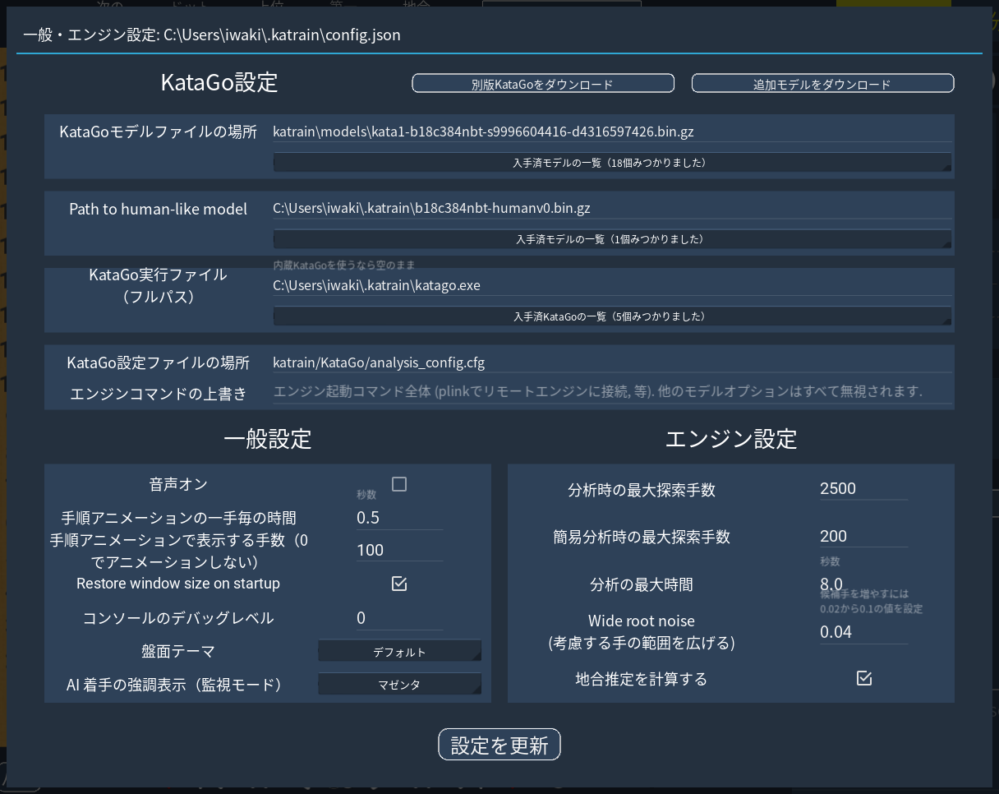
| 項目 | 何を入れるか |
|---|---|
| KataGoモデルファイルの場所 | 通常モデル。既定はパッケージ同梱の katrain/models/kata1-b18c384nbt-…bin.gz。「追加モデルをダウンロード」で別のモデルも取れます。 |
| Path to human-like model | humanSL モデルのフルパス（例 C:\Users\<あなた>\.katrain\b18c384nbt-humanv0.bin.gz）。空のままだと humanSL 系の戦略は「AI設定」に出ていても KataGo 最善手を打つだけになります。 |
| KataGo実行ファイル（フルパス） | katago.exe のフルパス。空なら内蔵の OpenCL 版を使います。TensorRT 版を使うならここに指定します。 |
| KataGo設定ファイルの場所 | 既定 katrain/KataGo/analysis_config.cfg（パッケージ同梱）。ここで指定したファイルだけがエンジンに渡されます。~/.katrain/analysis_config.cfg を編集しても効きません。 |
| エンジンコマンドの上書き | リモートの KataGo に接続するなど特殊な起動コマンドを丸ごと指定したいとき用。通常は空。 |
| 項目 | 意味 | 目安 |
|---|---|---|
| 分析時の最大探索手数 | 1 局面あたり KataGo が読む手数（visits）。多いほど正確で遅い。Human-like 系の AI 戦略の内部解析もこの値で動きます。 | RTX 3080 で 1000〜2000。CPU なら 100〜300 |
| 簡易分析時の最大探索手数 | 棋譜読込時の「簡易解析」や盤上全手の分析で使う軽い探索の手数。 | 25〜100 |
| 分析の最大時間 | 1 クエリに使ってよい秒数の上限。 | 8 |
| Wide root noise | 候補手を広く探索させる度合い。0.02〜0.1 で候補手が増えます（強さは少し落ちる）。 | 0.04 |
| 地合推定を計算する | 各交点がどちらの地になるかの推定（ownership）を毎回計算するか。OFF でも必要な戦略は自分で要求します。 | どちらでも可 |
C:\Users\<あなた>\.katrain\config.json に保存されます（ダイアログのタイトルにもパスが出ます）。
KaTrain を起動したままこのファイルを手で編集しないでください。終了時にアプリが設定を丸ごと書き戻すので、編集が消えます。
手で直すときは KaTrain を終了してからにします。
言語の切り替え
メニュー下部の国旗アイコンで切り替えます。本書は日本語表示を前提にしています（英語表示のときは戦略名が「Human-like」→「Human-like」、「力戦派」→「Fighting」のように変わります）。
03画面の見方
メイン画面
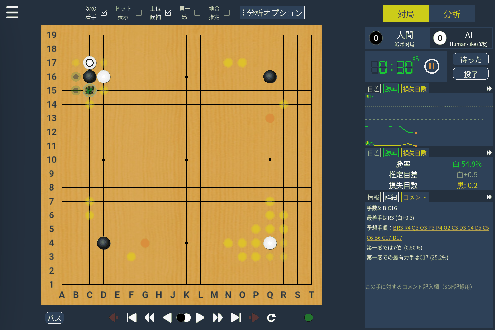
| 場所 | 役割 |
|---|---|
| 左上 ≡（ハンバーガー） | メインメニューを開きます（Alt でも開きます）。新規対局・棋譜の保存／読込・各種設定・言語がここに集まっています。 |
| 上部のチェックボックス | 「次の着手」「ドット表示」「上位候補」「第一感」「地合推定」。盤上に何を重ねて表示するかを切り替えます（q w e r t）。→ 05 |
| 「分析オプション」ボタン | さらに深く分析／評価レポート／詰碁用の外枠など、深い分析のメニューを開きます。→ 05 |
| 碁盤 | クリックで着手。候補手にカーソルを載せると予想手順が盤上に流れます。マウスホイールで手を進めたり戻したりできます。 |
| 右パネル上: 対局者 | 黒・白それぞれの「人間 / AI」と「AI の戦略」（AI のとき）または「通常対局 / 指導対局」（人間のとき）を切り替えます。丸いアイコンをクリックすると黒白を入れ替えます。 |
| 右パネル中: 対局／分析 の切替 | 「対局」「分析」ボタン（Tab）。分析モードでは AI の自動着手・指導の待った・時計が止まります。 |
| 右パネル: 目差／勝率／損失目数 タブ | 現在の局面の評価と、直前の手で何目損したか。 |
| 右パネル: 情報／詳細／コメント | 最善手・予想手順・AI の思考過程（戦略がどう手を選んだか）・SGF に保存するコメント欄。 |
| 右パネル下: 目差グラフ／手順ツリー | 対局モードでは時計、分析モードでは手順ツリー（分岐）と目差の推移グラフ。 |
| 右下のランプ | エンジンの状態。緑＝空き、オレンジ＝解析中、赤＝エンジン停止／起動失敗。 |
| 盤の下の ← → ボタン | 手を戻す／進める。赤い矢印は「次（前）の悪手の直前」へジャンプ。 |
対局モードと分析モード
右パネルの「対局」「分析」ボタン（または Tab）で切り替えます。それぞれのモードで「どのチェックボックスを ON にしていたか」「右パネルのどのタブを開いていたか」が別々に記憶されるので、 「対局中はヒントを出さない／分析中はすべて表示」のように使い分けられます。
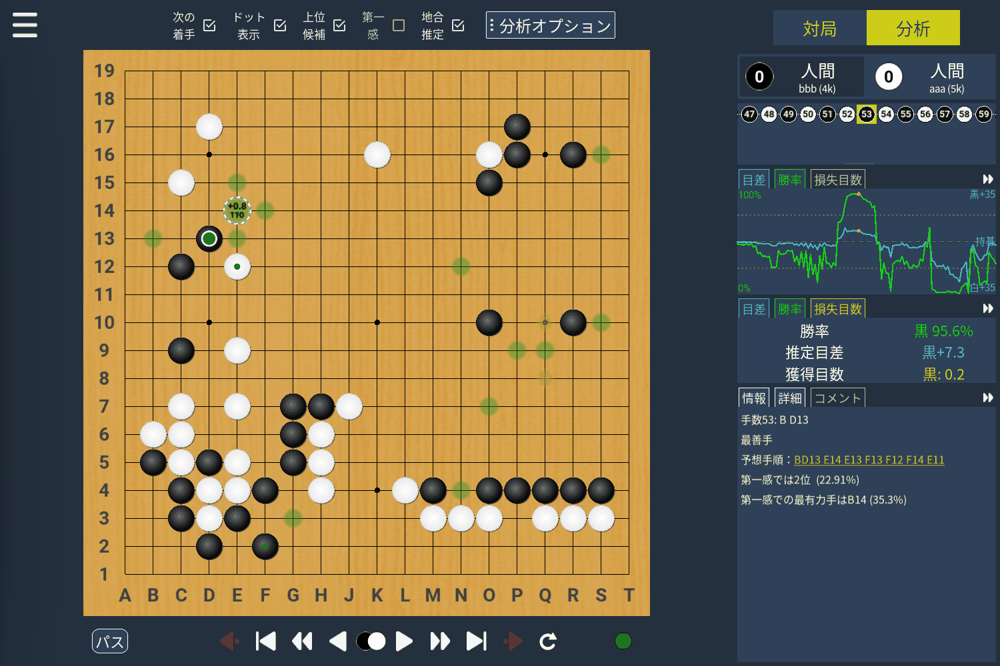
ドットの色の意味
着手の上に付く色つきの点は「その手で何目損したか」を表します。既定のしきい値（指導・分析設定で変更可）は次のとおりです。
| 色 | 損失（目） | 読み方 |
|---|---|---|
| 緑 | 0.5 未満 | ほぼ最善。 |
| 黄緑 | 0.5〜1.5 | 小さな緩手。 |
| 黄 | 1.5〜3 | やや損。 |
| オレンジ | 3〜6 | はっきりした悪手。指導対局ではここから「待った」がかかります。 |
| 赤 | 6〜12 | 大きな悪手。 |
| 紫 | 12 以上 | 致命的。 |
点の大きさは「その損が実際に相手に咎められたか」を表します（最大＝丸ごと咎められた、最小＝結果的に目差は動かなかった）。級位者は赤・紫の大きい点だけ見れば十分で、有段者は小さな点も参考になります。
最小表示（集中モード）
F12（または `）を押すたびに、右パネル → 上部トグルの順に非表示になり、碁盤だけの表示になります。もう一度押すと戻ります。
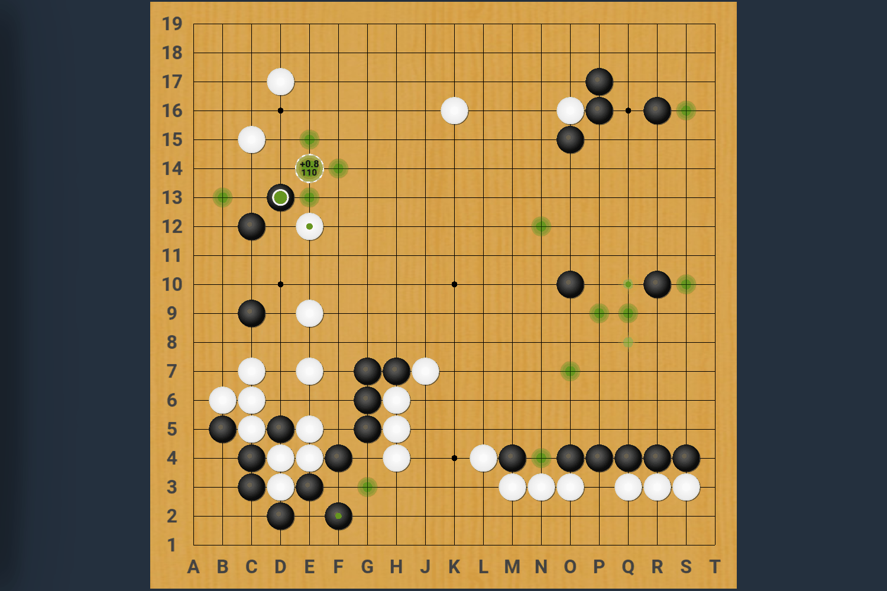
04対局する
新規対局を始める
メニュー →「新規対局・ルール変更」（Ctrl+N）で次のダイアログが開きます。

| 項目 | 説明 |
|---|---|
| 対局者名 | 棋譜（SGF）に記録される名前。空欄でも構いません。 |
| プレイヤー（黒／白） | 「人間」か「AI」。人間のときは「通常対局」「指導対局」を、AI のときはAI の戦略を選びます。丸いアイコンで黒白を入れ替えられます。 |
| ルール | 日本／中国／韓国／AGA／ニュージーランド／Tromp-Taylor／古代中国。中国ルール（地＋石を数える）ではダメを詰めても目数が動かないため、AI 戦略の終局判定は「人間ならパスするか」も見て決めます。対局アプリと合わせて使う場合はアプリのルールに揃えてください。 |
| コミ | 白がもらう目数。19路は 6.5（日本）〜7.5（中国）、9路は 7.0 が一般的です。 |
| 碁盤サイズ | 9／13／19 のほか、19:9 のように書くと長方形の盤も作れます。9路・13路・19路それぞれ専用の戦略があります（持碁(9路)・一致率追随(9路)・難解(9/13/19路)）。 |
| 置き石 | 0〜9。置碁のときは「Kata置碁」戦略が置き石に合わせて手加減の度合いを自動調整します。 |
| 思考記録をクリア | ON にすると KataGo の探索キャッシュを捨てて始めます。同じ手順を毎回再現してしまうのを防ぎたいときに使います。 |
局面を生成（自己対局で途中局面を作る）
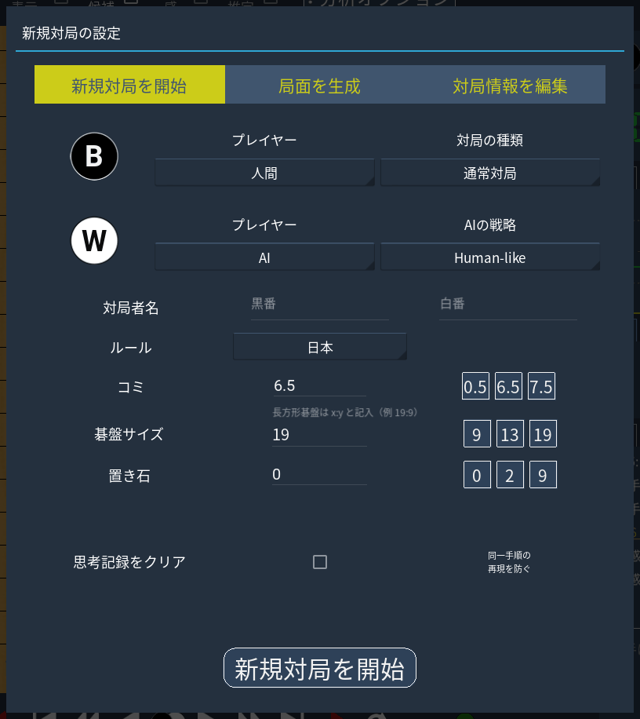
対局情報を編集
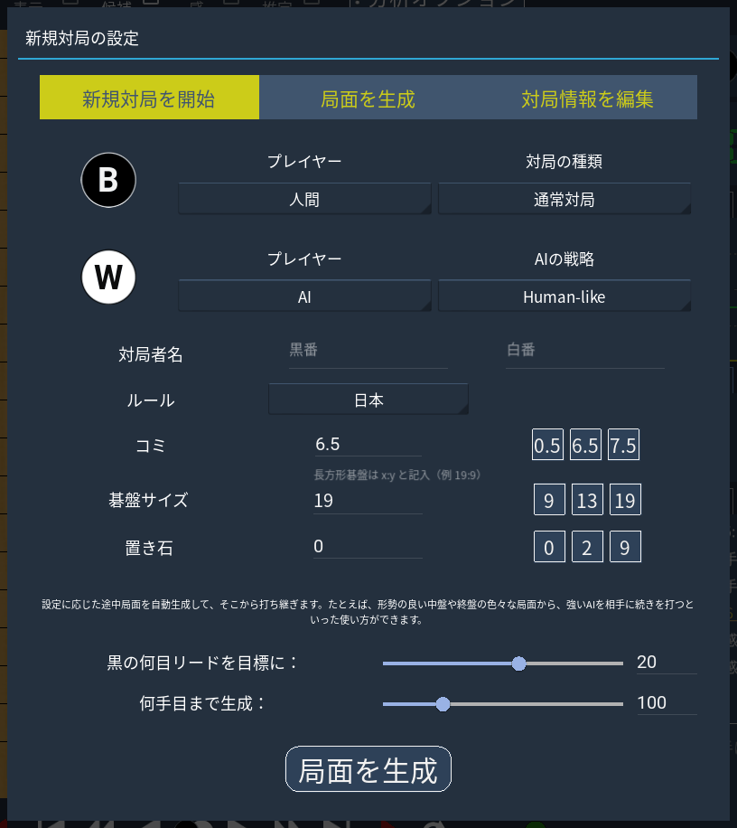
対局者設定（人間 / AI・戦略の切り替え）
対局の途中でも、メイン画面の右パネル上部（またはメニュー →「対局者設定」）で黒白それぞれの「人間 / AI」と AI の戦略を切り替えられます。 戦略の細かい設定は F7「AI設定」で行います（→ 06）。
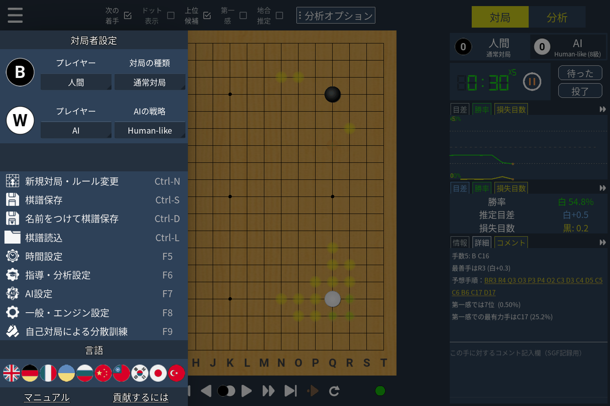
指導対局（悪手を自動で待った）
人間側を「指導対局」にすると、KaTrain があなたの手を毎回分析し、しきい値より損な手には自動で「待った」をかけて打ち直させます。 待ったの回数・しきい値は「指導・分析設定」（F6）で決めます。
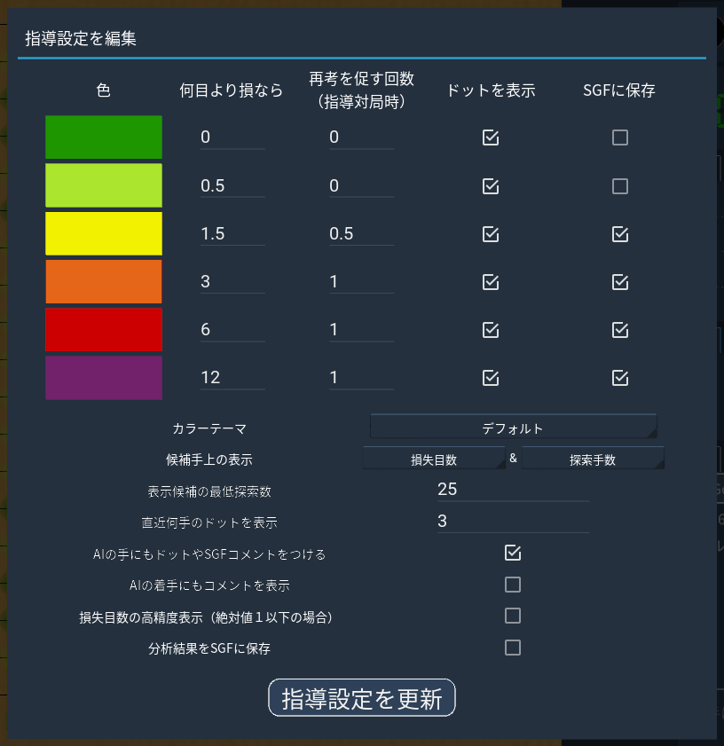
| 項目 | 意味 |
|---|---|
| 何目より損なら | ドットの色分けのしきい値（既定 12 / 6 / 3 / 1.5 / 0.5 / 0 目）。 |
| 再考を促す回数 | 指導対局でその色の手に何回まで「待った」をかけるか。既定は紫・赤・オレンジが 1 回、黄が 0.5（確率 50%）、それ以下は 0。 |
| カラーテーマ | ドットの配色。「赤緑色弱」向けのテーマがあります。 |
| 候補手上の表示 | 上位候補に表示する数字の種類（損失目数／目差／勝率／探索手数など）。2 つ目は副表示。 |
| 表示候補の最低探索数 | これより探索手数が少ない候補は数字を出しません（小さく薄い点になる）。 |
| 直近何手のドットを表示 | 「ドット表示」が「直近だけ」のとき、何手ぶんまで点を付けるか。 |
| AIの手にもドット／コメントをつける | OFF にすると人間の手だけに点やコメントが付きます。 |
| 分析結果をSGFに保存 | ON にすると保存する棋譜に解析結果を埋め込み、次に開いたとき解析なしで表示できます（ファイルは大きくなります）。 |
時間設定
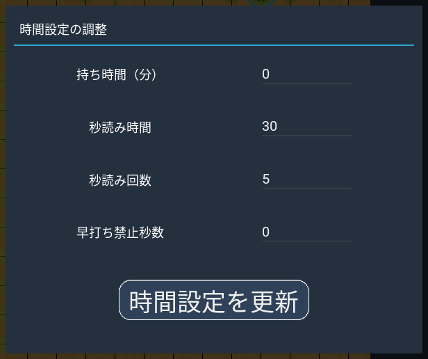
対局中の操作
| 操作 | ボタン / キー | 説明 |
|---|---|---|
| 着手 | 盤をクリック | 自分の手番のときだけ有効。AI の手番は自動で進みます。 |
| パス | 「パス」／p | 連続パスで終局。終局時は地合推定に基づく結果が表示されます。 |
| 待った | 「待った」／← z | AI 相手のときは AI の手と自分の手の 2 手が戻ります。Shift で 10 手、Ctrl で最初まで。 |
| 投了 | 「投了」 | 結果を記録して終局します。 |
| AI に打たせる | Enter | 今の手番が人間でも、選択中の戦略で AI に 1 手打たせます。 |
| 手を進める | → x | 待ったで戻した手を進め直す。 |
| 座標表示 | k | 盤の座標（A〜T・1〜19）の表示切替。 |
| 手数表示 | m | 石に手数を表示。起動時の初期状態は指導・分析設定（F6）の「盤上に手数を表示する」で決まります。 |
05分析する
棋譜を読み込む・保存する
- 読込: メニュー →「棋譜読込」（Ctrl+L）。SGF のほか NGF・GIB も読めます。ファイルをウィンドウにドラッグ＆ドロップしても開けます。
- クリップボードから: SGF のテキストをコピーして Ctrl+V。全手を簡易解析し、最終手だけ通常解析します。
- 保存: 「棋譜保存」（Ctrl+S）／「名前をつけて棋譜保存」（Ctrl+D）／Ctrl+C でクリップボードへ。既定の保存先は一般設定の
sgf_save（このリポジトリではsgfout/）。
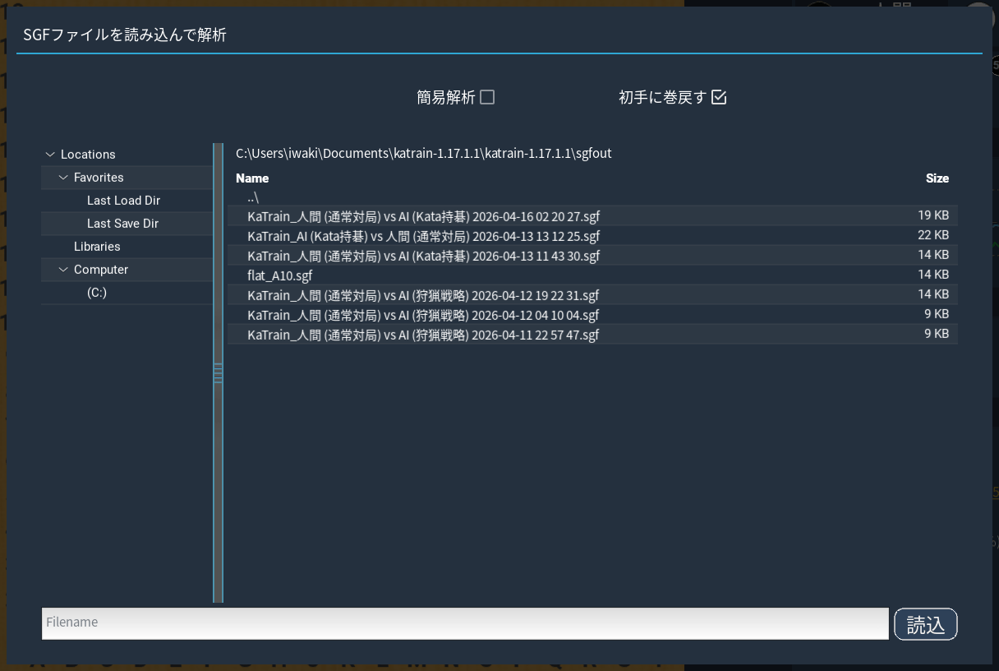
盤上に表示するもの（上部のチェックボックス）
| キー | チェックボックス | 表示されるもの |
|---|---|---|
| q | 次の着手 | 棋譜で次に打たれた手（分岐がある場合はすべて）。次の一手を当てる練習のときは OFF に。 |
| w | ドット表示 | 着手の損失を色で示す点。3 状態（全部／直近だけ／なし）。 |
| e | 上位候補 | KataGo が読んだ候補手を損失の色つきで表示。候補にカーソルを載せると予想手順が盤上に流れます。小さく薄い点は探索が浅く信頼度が低い手。 |
| r | 第一感 | ニューラルネットの「読まずに感じる」第一候補（policy）。数字はその確率。ON にすると「上位候補」は自動で OFF になります。 |
| t | 地合推定 | 各交点がどちらの地になりそうか（ownership）を色の濃さで表示。 |
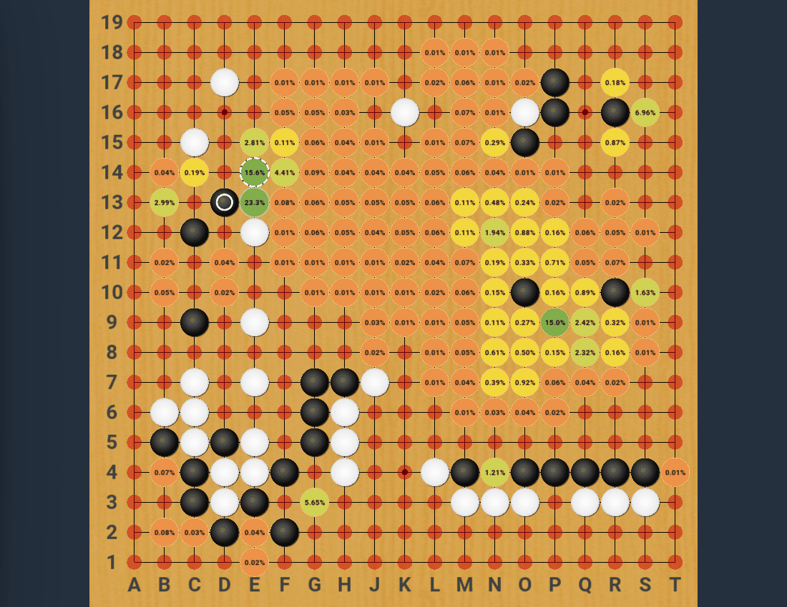
分析オプション（深い分析のメニュー）
「分析オプション」ボタンを押すと次のメニューが開きます。各項目はキー 1 つでも呼び出せます。
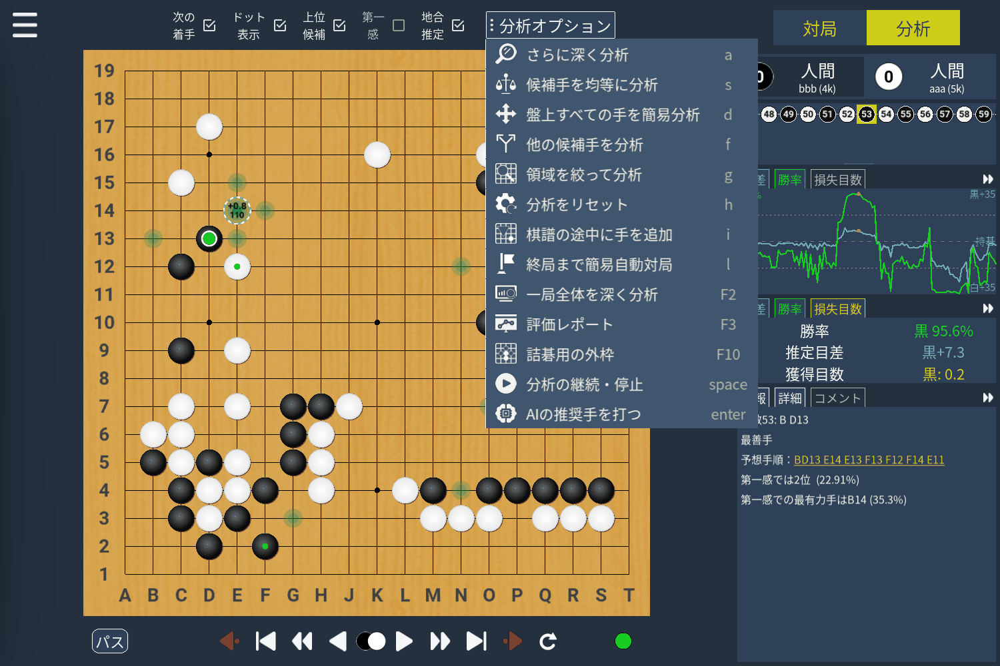
| キー | 項目 | 何をするか |
|---|---|---|
| a | さらに深く分析 | 今の局面をより多くの探索手数で読み直し、評価の精度を上げます。 |
| s | 候補手を均等に分析 | 表示中の候補手をすべて最善手と同じ探索手数まで読ませ、薄い点の候補の信頼度を上げます。 |
| d | 盤上すべての手を簡易分析 | 打てる手を全部軽く評価します。「まともな手が何通りあるか」を見るのに便利。 |
| f | 他の候補手を分析 | 今の候補手を除外して新たな候補を探させます。 |
| g | 領域を絞って分析 | 盤上をドラッグして囲んだ範囲の中だけを読ませます。詰碁や部分的な死活を調べるときに。解除は範囲を指定するメッセージが出ている間に盤上の 1 点だけをクリック。 |
| h | 分析をリセット | 追加分析の結果を捨て、通常の分析結果に戻します。 |
| i | 棋譜の途中に手を追加 | 「挿入モード」。途中に手を差し込んだあと、もう一度 i を押すと残りの手順がコピーされます。両者が見落とした手の交換を補って解析するときに。 |
| l | 終局まで簡易自動対局 | 今の局面から AI 同士で終局まで打ち、折り畳んだ分岐として追加します。ミスの影響を最後まで見たいときに。 |
| F2 | 一局全体を深く分析 | 全手を指定の探索手数で読み直します（下記）。 |
| F3 | 評価レポート | 両者の正確度・平均損失・AI との一致率を序盤／中盤／終盤別に表示します（下記）。 |
| F10 | 詰碁用の外枠 | 隅や辺に置いた死活問題の周りを石で埋め、AI が詰碁として正しく読めるようにします（→ 07）。 |
| Space | 分析の継続・停止 | 他の解析が無い間、今の局面を読み続けます（Lizzie の「ponder」相当）。Shift+Space なら「上位候補」を ON にせずに開始。 |
| Enter | AIの推奨手を打つ | 今の手番の対局者設定に関係なく AI に 1 手打たせます。 |
評価レポート（F3）
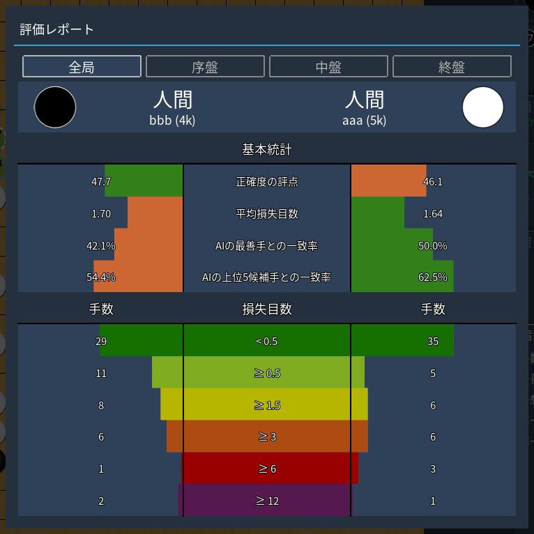
一局全体を深く分析（F2）
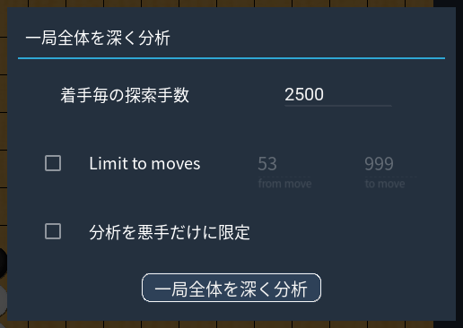
手順ツリーとグラフ
- 分析モードの右下に手順ツリーが出ます。クリックで任意の手へ、↑↓ で分岐の切り替え、b で前の分岐点へ、c で分岐の折り畳み。
- 右クリックのメニューで「こちらを主分岐に」「この手以降を削除」「この枝だけ残して他を削除」ができます。
- 候補手の上でマウスホイールを回すと予想手順を 1 手ずつ進められ、ホイールをクリックすると手順ツリーに追加できます。
- 目差グラフは勝率／目差の推移。クリックでその手に飛べます。
- 「情報」タブの「AIの思考過程」には、AI 戦略がどの候補をどう比較して選んだかが 1 行で出ます（例:
[Enigma13] …）。戦略の挙動を確かめるときに便利です。
06AI 戦略ガイド
KaTrain の AI は「戦略」を選ぶことで棋風や強さが変わります。この章では、まずどの戦略を選べばよいかを目的別にまとめ、 次に AI 設定画面の使い方、そして戦略ごとの設定項目を「値を変えるとどうなるか」まで解説します。
戦略の選び方（早見表）
| 戦略名（画面表示） | 内部名 | 盤サイズ | humanSL | ひとこと |
|---|---|---|---|---|
| 手加減なし | ai:default | 全部 | — | KataGo の最善手。設定項目なし |
| Human-like | ai:human | 全部 | 必須 | 指定した段級位の人間らしい手。改修の土台 |
| Historical Pro | ai:pro | 全部 | 必須 | 指定した年代のプロ棋士風 |
| AI一致率低減 | ai:diverge_move | 全部 | 必須 | 人間らしさを保ちつつ最善手との一致率を下げる |
| 段級位相応 | ai:p:rank | 全部 | — | 級位を指定して弱くする（校正済み） |
| Kata置碁 | ai:handicap | 全部 | — | 置碁で置き石を最大限活かす打ち方 |
| 簡明派 | ai:simple | 全部 | — | 盤面を単純化する手を好む |
| 損も混ぜて | ai:scoreloss | 全部 | — | 損の少ない手をランダムに混ぜる |
| 第一感 | ai:policy | 全部 | — | 読みなしの直感手（約5段） |
| 第一感（比重） | ai:p:weighted | 全部 | — | 直感の確率どおりに抽選（弱い） |
| Kata持碁 | ai:jigo | 13・19 | 必須 | 指定の目差で僅差勝ちを狙う |
| Kata持碁（9路） | ai:jigo9 | 9 | 必須 | 同・9路専用 |
| 一致率追随（9路） | ai:parity9 | 9 | 必須 | 一致率を目標値まで下げつつ勝ち切る |
| 擬態（13路） | ai:mimic13 | 13 | 必須 | 相手より低い一致率を保って勝つ（人間らしい外し＋罠・ヨセは9段） |
| 韜晦（9路） | ai:veil9 | 9 | 必須 | 勝ちを優先して自分の一致率を目標まで下げる（未校正） |
| 韜晦（13路） | ai:veil13 | 13 | 必須 | 同・13路専用（自己対局で測定して選んだ既定値） |
| 韜晦（19路） | ai:veil19 | 19 | 必須 | 同・19路専用（未校正） |
| 難解（9路） | ai:enigma9 | 9 | 必須 | 相手が正しく応じにくい手を選ぶ |
| 難解（13路） | ai:enigma13 | 13 | 必須 | 同・13路専用 |
| 難解＋（9路） | ai:enigma9plus | 9 | 必須 | 難解の改良版。高い帯まで罠を探し、E を買わない外しは打たない（未校正） |
| 難解＋（13路） | ai:enigma13plus | 13 | 必須 | 同・13路専用（実対局で確認済み） |
| 難解＋（19路） | ai:enigma19plus | 19 | 必須 | 同・19路専用（未校正） |
| 難解（19路） | ai:enigma19 | 19 | 必須 | 同・19路専用 |
| Kataマネ碁破り | ai:antimirror | 全部 | — | マネ碁をされたときの対策 |
| 第一感（盲点） | ai:p:pick | 全部 | — | 盤の一部しか見えない弱い AI |
| おつきあい派 | ai:p:local | 全部 | — | 直前の手の近くに打ちたがる |
| 手抜き派 | ai:p:tenuki | 全部 | — | 直前の手から離れて打ちたがる |
| 実利派 | ai:p:territory | 全部 | — | 低い手（1〜3線）を好む |
| 勢力派 | ai:p:influence | 全部 | — | 高い手（4線以上）を好む |
| 力戦派 | ai:p:fighting | 全部 | Human拡張/複雑化で必須 | 未確定地と相手石の近くで戦う |
| 攻城戦略 | ai:siege | 13・19 | 必須 | 序盤は譲り、中盤に大石を攻める |
| 狩猟戦略 | ai:hunt | 13・19 | 必須 | 序盤から侵入し弱い石を攻め続ける |
| 狩猟戦略（一致率低減） | ai:hunt_diverge | 13・19 | 必須 | 狩猟＋最善手の回避 |
| 詰碁 | ai:tsumego | — | — | 詰碁キャプチャが自動で使う（手動選択は非推奨） |
| 詰碁ソルバ | ai:tsumego_solver | — | — | 同上（死活を厳密に解く） |
b18c384nbt-humanv0.bin.gz）の「人間ならここに打つ確率（humanPolicy）」を土台にしています。
一般・エンジン設定の「Path to human-like model」が空だと、これらの戦略は選べてもただの KataGo 最善手になります（→ 02）。
また humanSL 系は毎手 2 回以上の解析をするため、「手加減なし」より着手に時間がかかります（RTX 3080・19路で 1〜3 秒程度）。
AI 設定画面の使い方
メニュー →「AI設定」（F7）で開きます。
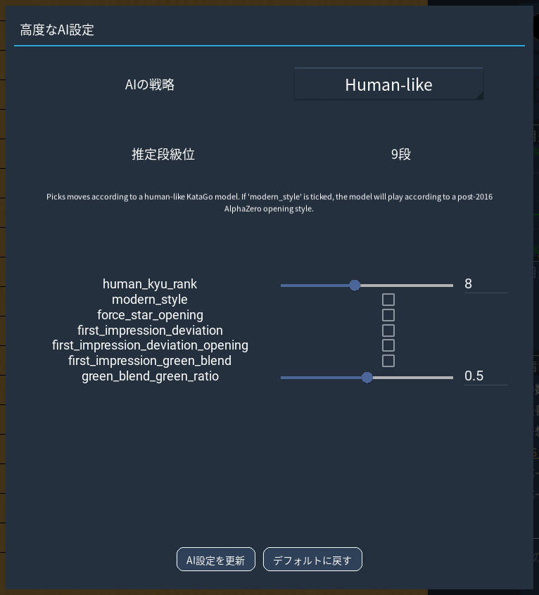
- 説明欄: 戦略の概要のあとに【各項目】として、画面の上から順に「■ 英語のキー名（日本語名）［既定 値］: 解説」が並びます。画面の項目名は英語のキー名なので、説明欄の同じキー名を探せばどのスライダーの解説か分かります。説明欄をクリックすると大きな画面で開き、大きめの文字でスクロールして読めます（「閉じる」か Esc で戻る）。
- 項目欄: 項目が多い戦略（力戦派・難解＋・持碁など 20 項目前後）は項目欄がスクロールします。右端のスクロールバーかマウスホイールで動かしてください（スクロールする戦略では、項目欄の上のホイールはスライダーではなくリストを動かします）。
- 推定段級位: 校正済みの戦略（段級位相応・損も混ぜて・第一感系）では、設定値から強さの目安が表示されます。humanSL 系は「?」のままです。
- スライダー＋数値ボックス: スライダーは決められた候補値に吸い付きます。候補にない値は右の数値ボックスに直接入力すれば保存できますが、その後スライダーを一度でも動かすと最寄りの候補値に戻ります。
- 色の薄いスライダー（上のほうの項目）は「校正済み・強さに直結する」項目、濃いものは補助的な項目です。
- チェックボックスは ON/OFF の機能スイッチ。
- 設定は戦略ごとに別々に保存されます（例: 「難解（9路）」と「難解（13路）」は別の値）。
- 設定画面の項目名は英語のキー名のまま表示されます（例
hunt_max_loss）。説明欄の【各項目】と本章の表はそのキー名で引けるようにしてあります。 - 本章のスクリーンショットに写っている数値は撮影した環境の現在値で、必ずしも既定値ではありません。既定値は各表の「既定」列を見てください。
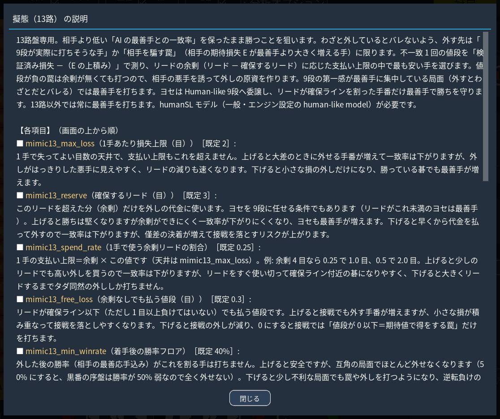
共通の考え方: 「損失」「humanPolicy」「安全弁」
改修版の戦略の設定項目を読むには、次の 3 つの言葉を押さえておくと楽です。
| 言葉 | 意味 | 設定でよく出る形 |
|---|---|---|
| 損失（目） | KataGo の最善手と比べて「その手を打つと何目損するか」。0 が最善手。人間らしい戦略は、候補の中から損失がしきい値以下の手だけを残してから選びます。 | *_max_loss「損失上限」。上げる＝より損な手も打つ＝弱く・個性的に、下げる＝最善手に近づく＝強く・AI っぽく |
| humanPolicy | humanSL モデルが出す「その段位の人間がその手を打つ確率」。高いほど自然な手。多くの戦略は候補をこの確率で重み付けして抽選します。 | min_human_policy「humanPolicy 下限」。下げると「人間があまり打たない手」まで候補に入る |
| 安全弁 | どの戦略にも入っている保険。重み付けで選ばれそうな手が 4 目以上損なら KataGo の最善手に差し替えます（攻撃型）／勝率が下限を割る手は打たない（一致率追随・難解）。設定をどう変えても大崩れしないのはこのためです。 | *_min_winrate「勝率フロア」など |
*_endgame_move（ヨセ切替手数）で決まります。ヨセで手を緩めると相手から見て露骨に不自然なので、ヨセは最善手か「9段の人間」に任せる設計になっています。
標準の戦略（元の KaTrain から引き継いだもの）
ここに挙げる戦略は元の KaTrain にもあるもので、humanSL モデルは使いません。設定画面の説明文もそのまま読めますが、設定項目の意味と「上げる／下げる」をまとめておきます。
手加減なし ai:default
KataGo の最善手をそのまま打ちます。強さは一般・エンジン設定の「分析時の最大探索手数」とモデルで決まります。分析やドットの評価は、どの戦略を選んでいてもこの「手加減なし」の KataGo が行います。
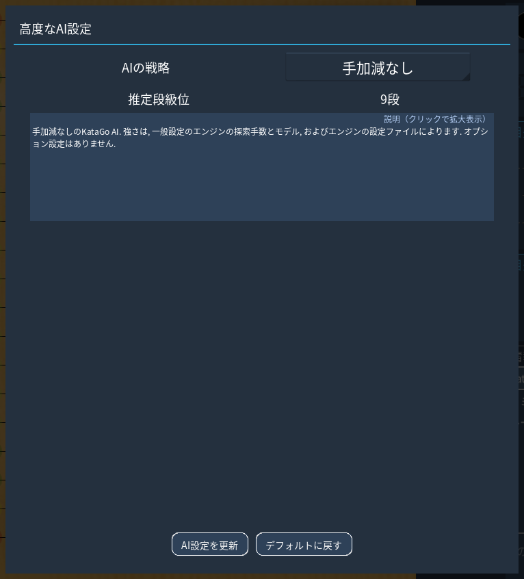
段級位相応 ai:p:rank
合法手の中からランダムにいくつか候補を選び、その中で最も第一感（policy）の高い手を打ちます。強い設定ほど多くの候補から選ぶので強くなります。GnuGo や Pachi などのボットで校正されており、序盤から終盤まで大ポカをしないバランスの良い弱さが特徴です。相手の強さを合わせたいときの第一候補。
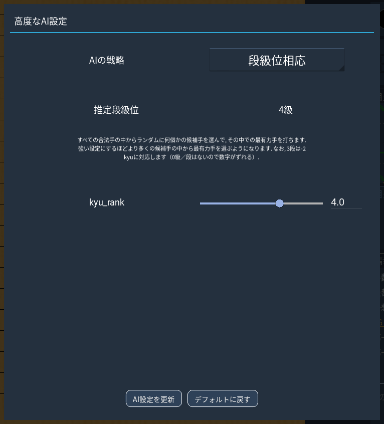
| 設定項目 | 既定 | 範囲 | 意味 | 上げると／下げると |
|---|---|---|---|---|
| kyu_rank | 4 | 15級〜3段 | 目標の段級位。 | 級数を上げる（弱く）候補が減り見落としが増える。段側へ強くなる。3段は内部値 −2 に対応 |
Kata置碁 ai:handicap
置き石が多い碁で、KataGo が「不利を承知で最も勝ちやすい手」を打つモードです。通常の KataGo は置碁の白番だと投げやりな手を打ちがちなので、置碁で強い相手が欲しいときはこちらを選びます。
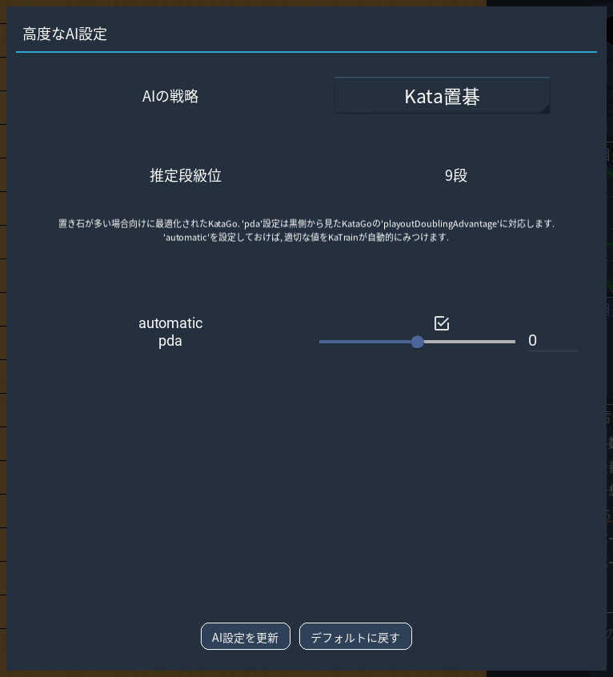
| 設定項目 | 既定 | 範囲 | 意味 | 上げると／下げると |
|---|---|---|---|---|
| automatic | ON | ON/OFF | 置き石数から pda を自動で決める。 | OFF にすると下の pda を手で指定 |
| pda | 0 | W+3.0〜B+3.0 | KataGo の playoutDoublingAdvantage（黒から見た「読みの強さの差」の仮定）。 | W 側へ「黒は白より読みが浅い」と仮定して、白（置碁の上手）が相手のミスを期待する勝負手を増やす（automatic なら置き石が多いほどこちら）。B 側へその逆 |
簡明派 ai:simple
「盤面を単純にする手」を好みます。損の少なさに加えて、自分と相手の確定地が増える手・相手の手の近くに応じる手・相手の石にくっつかない手を高く評価します。重視度を負にすると逆に複雑化を目指します。一般設定の Wide root noise を上げると、強さを犠牲にこの基準により忠実になります。
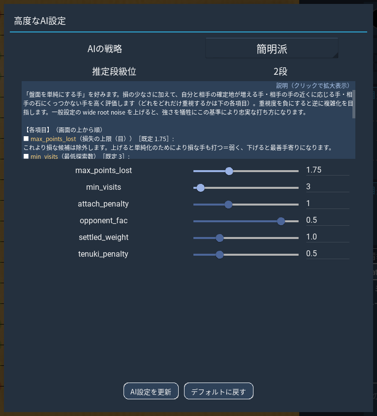
| 設定項目 | 既定 | 範囲 | 意味 | 上げると／下げると |
|---|---|---|---|---|
| max_points_lost | 1.75 | 0〜5.0 | これ以上損な候補は除外（目）。 | 上げる単純化のためにより損な手も打つ＝弱く。下げる最善手寄り |
| settled_weight | 1.0 | 0〜4.0 | 「確定地を増やす」重視度。 | 上げる地を固める手を強く好む。負なら複雑化 |
| opponent_fac | 0.5 | −2.0〜1.0 | 相手の確定地が増えることの重視度（settled_weight との積）。 | 上げる相手にも地を与えて穏やかに。負なら相手の地を荒らしたがる |
| min_visits | 3 | 1〜30 | この探索手数未満の候補は無視。 | 上げる読みの浅い手を候補から外して安定 |
| attach_penalty | 1 | −1.0〜5.0 | 相手の石に接触する手のペナルティ。 | 上げるツケ・ハネを避ける。負ならくっつきたがる |
| tenuki_penalty | 0.5 | −1.0〜5.0 | 相手の手から縦横 3 間より離れた手のペナルティ。 | 上げるおつきあいして応じる。負なら手抜きしたがる |
損も混ぜて ai:scoreloss
損する目数に応じた確率でランダムに手を選びます（損が大きいほど低確率）。「小さなミスを時々する」多彩な相手になります。探索手数が多いほど候補が増えて弱くなる点に注意。
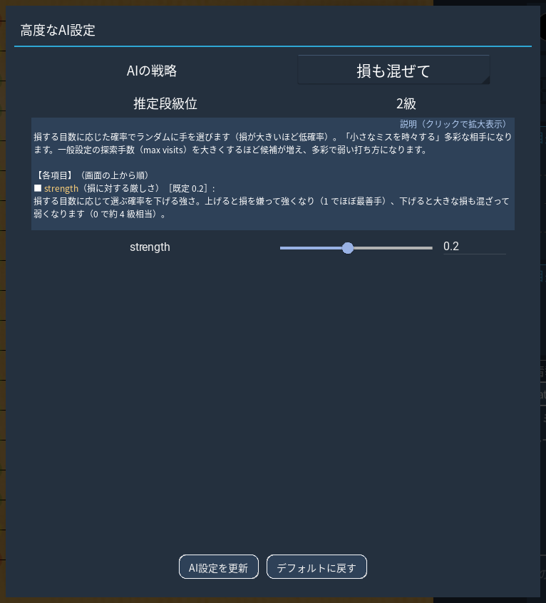
| 設定項目 | 既定 | 範囲 | 意味 | 上げると／下げると |
|---|---|---|---|---|
| strength | 0.2 | 0〜1 | 損に対する厳しさ。1 でほぼ最善手。 | 上げる強く（損を嫌う）。下げる大きな損も混ざり弱く（0 で約 4 級相当） |
第一感 ai:policy
一手も読まずに、ニューラルネットの「形の感覚」だけで最有力手を打ちます。読みが無いので石の取り合いやコウで見落としをします。
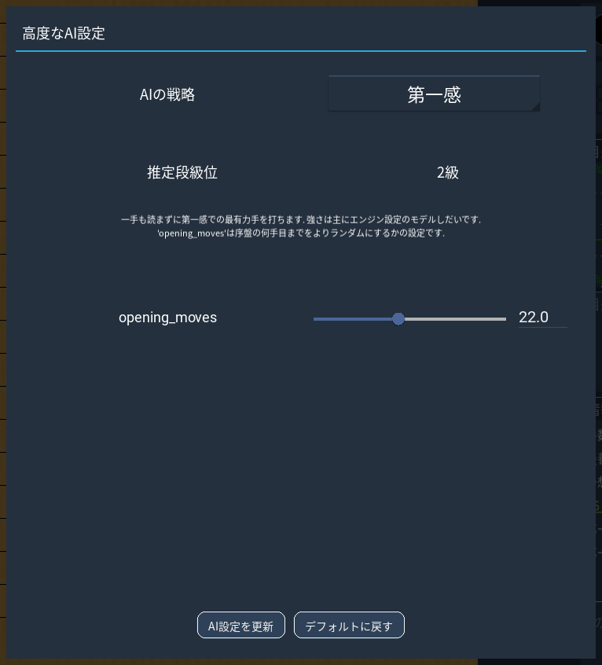
| 設定項目 | 既定 | 範囲 | 意味 | 上げると／下げると |
|---|---|---|---|---|
| opening_moves | 22 | 0〜50 | 序盤の何手目までをよりランダムにするか。 | 上げる布石が毎回変わる。0 で常に同じ布石 |
第一感（比重） ai:p:weighted
第一感の確率そのままに手を抽選します。小さなミスが多く、読み不足でたまに大ポカもする「らしい」弱さです。
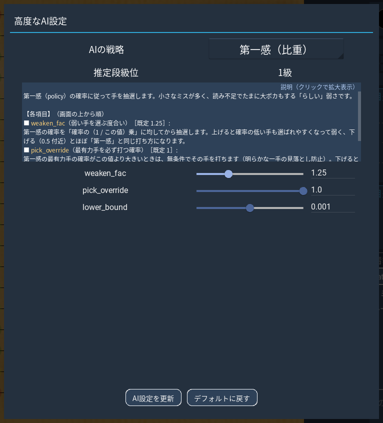
| 設定項目 | 既定 | 範囲 | 意味 | 上げると／下げると |
|---|---|---|---|---|
| weaken_fac | 1.25 | 0.5〜3.0 | 弱そうな手を選ぶ度合い。 | 上げる低確率の手も選び弱く。下げる（0.5 付近）ほぼ「第一感」と同じ |
| pick_override | 1.0 | 0〜1 | 最有力手の確率がこれ以上ならその手を無条件で打つ。 | 下げる「明らかな一手」を見逃さなくなる＝強く |
| lower_bound | 0.1% | 0〜5% | この確率未満の手は決して打たない。 | 上げる変な手が減る |
第一感（盲点） ai:p:pick
pick_n + pick_frac × 合法手の数 個の手をランダムに選び、その中で最善の手を打ちます。毎手「盤の一部が見えていない」状態になるので、盲点のある弱さを再現します。同じ仕組みで校正した「段級位相応」のほうが使いやすいです。
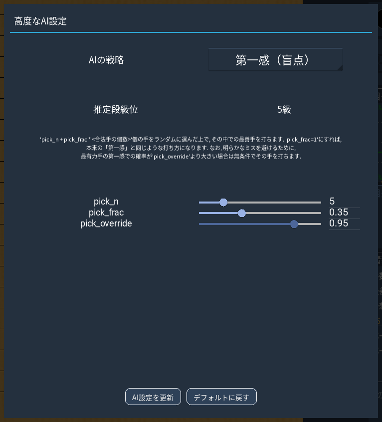
| 設定項目 | 既定 | 範囲 | 意味 | 上げると／下げると |
|---|---|---|---|---|
| pick_override | 0.95 | 0〜1 | 最有力手の確率がこれ以上なら無条件で打つ（明らかなミス防止）。 | 下げる強く |
| pick_n | 5 | 0〜25 | 候補の固定数。 | 上げる見える範囲が広がり強く |
| pick_frac | 0.35 | 0〜1 | 候補の割合（合法手数に対する）。 | 上げる強く。1 で「第一感」と同じ |
おつきあい派 ai:p:local
「盲点」と同じ仕組みですが、直前の着手に近い手ほど候補に入りやすいようにします。相手の手に必ず応じる、手抜きをしない相手になります。
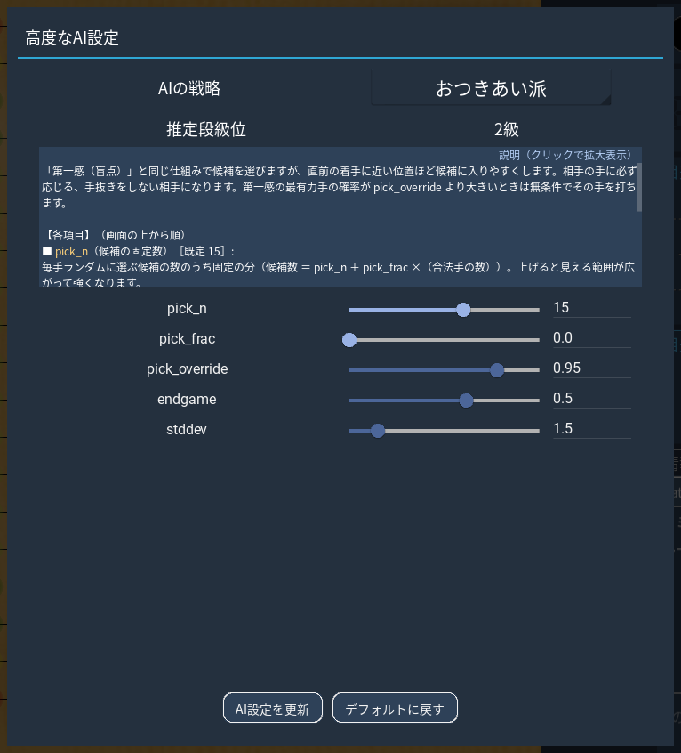
| 設定項目 | 既定 | 意味 / 上げると |
|---|---|---|
| pick_override | 0.95 | 明らかな一手はそのまま打つしきい値 |
| stddev | 1.5 | 「近さ」の広がり（路）。上げると少し離れた手も候補に |
| pick_n / pick_frac | 15 / 0 | 候補数。上げると強く |
| endgame | 0.5 | 盤のこの割合が埋まったら重み付けをやめ普通に打つ |
手抜き派 ai:p:tenuki
逆に直前の着手から遠い手ほど候補に入りやすい。相手の手に応じず大場へ回る「手抜き」だらけの相手です。
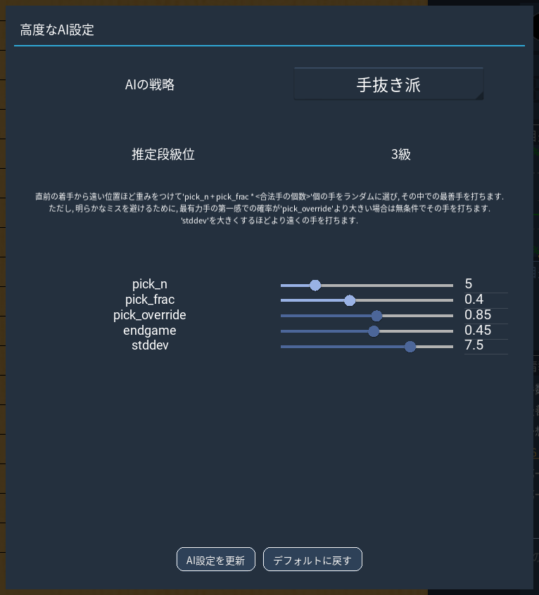
| 設定項目 | 既定 | 意味 / 上げると |
|---|---|---|
| pick_override | 0.85 | 明らかな一手はそのまま打つしきい値 |
| stddev | 7.5 | 「遠さ」の広がり。上げるとより遠くへ |
| pick_n / pick_frac | 5 / 0.4 | 候補数。上げると強く |
| endgame | 0.45 | 盤のこの割合が埋まったら普通に打つ |
勢力派 ai:p:influence
threshold 線より高い（中央寄りの）手に重みを付け、中央志向の碁を打ちます。
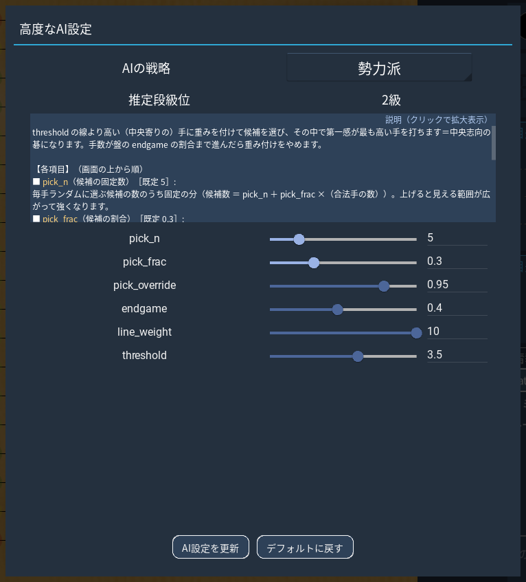
| 設定項目 | 既定 | 意味 / 上げると |
|---|---|---|
| threshold | 3.5 | この線より上を好む（3.5 なら 4 線以上） |
| line_weight | 10 | 上げるほど低い手を強く避ける |
| pick_n / pick_frac / pick_override | 5 / 0.3 / 0.95 | 候補数と明らかな一手のしきい値 |
| endgame | 0.4 | 盤のこの割合が埋まったら普通に打つ |
実利派 ai:p:territory
逆に低い（1〜3 線の）手を好み、地を稼ぐ碁を打ちます。
| 設定項目 | 既定 | 意味 / 上げると |
|---|---|---|
| threshold | 3.5 | この線より下を好む |
| line_weight | 2 | 上げるほど高い手を強く避ける |
| pick_n / pick_frac / pick_override | 5 / 0.3 / 0.95 | 候補数と明らかな一手のしきい値 |
| endgame | 0.4 | 盤のこの割合が埋まったら普通に打つ |
Kataマネ碁破り ai:antimirror
相手がマネ碁（自分の手を点対称に真似る）をしている前提で、マネ碁を利用して得をする KataGo のモードです。相手がマネ碁をやめれば普通の KataGo になります。
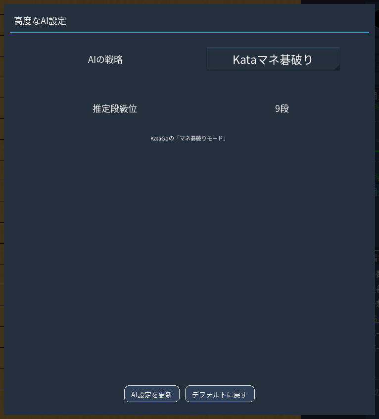
人間らしい AI（humanSL モデルを使う戦略）
Human-like ai:human
人間の棋譜から学習した humanSL モデルに「この段級位の人はどこに打つか」を聞き、その確率（humanPolicy）で手を抽選します。 改修版ではこれに悪手フィルタが加わっています: 候補をいったん「きれいな」KataGo で読み直し、 致命的に損な手（序盤 2.8 目・中盤以降 5.6 目より損。9路は 0.5 / 3.3 目）は人間らしくても打たないようにしました。 人間の「たまにやる大ポカ」だけを取り除いた、最も自然な対局相手です。
| 設定項目 | 既定 | 範囲 | 意味 | 上げると／下げると |
|---|---|---|---|---|
| human_kyu_rank | 8（8級） | 20級〜9段 | 真似する人間の段級位。最も効く設定。 | 級数を上げる弱く・荒く。段側へ強く。9段（内部値 −8）が最強 |
| modern_style | OFF | ON/OFF | ON で 2016 年以降の AI 風布石（三々入り等）を好むプロファイル。 | ON にすると高段者ほど現代風。星打ちを強制したいときは OFF 推奨（現代風プロファイルは星に低い確率を付ける） |
| force_star_opening | OFF | ON/OFF | 序盤に二連星（隅の星 2 つ）を強制する。自分の星が 0 なら空いている隅星（相手が星にいればその対角）、1 つなら同じ辺の星を打つ。 | ON で布石が安定して「星の碁」になる。完成後や盤サイズ非対応なら通常選択に戻る |
| first_impression_deviation | OFF | ON/OFF | 第一感ブレ。中盤以降、悪手フィルタを通った候補の上位 3 手のうち「0.5 目以上・上限未満（9路 1.5 目・13/19路 2.0 目）損する手」があれば、その中で最も損の少ない手を確定で選ぶ。 | ON で「最善ではないが大悪手でもない、いかにも人間らしい緩手」が毎手混ざる。一致率が下がる |
| first_impression_deviation_opening | OFF | ON/OFF | 上のブレを序盤（19路 50 手目まで）にも適用する。 | ON で布石も揺れる。序盤のミスは響くので既定 OFF |
| first_impression_green_blend | OFF | ON/OFF | ブレ ON のとき、第一感 1 位が「緑の手（0.5 目未満の損）」だった場合に、その緑の手とブレた手のどちらを打つかを確率で決める。 | ON で毎局違う手順になり単調さが消える |
| green_blend_green_ratio | 0.5 | 0.4 / 0.5 / 0.6 | green_blend で緑の手を選ぶ確率。 | 0.6（緑寄り）手堅く。0.4（dev 寄り）ブレが多い |
Historical Pro ai:pro
humanSL モデルの「プロ棋士・強い院生」プロファイルで、指定した年代とその前後の棋譜に基づく手を真似します。江戸時代風・昭和風など時代ごとの布石感覚を体験できます。悪手フィルタなどの改修は入っていません（元の KaTrain そのまま）。
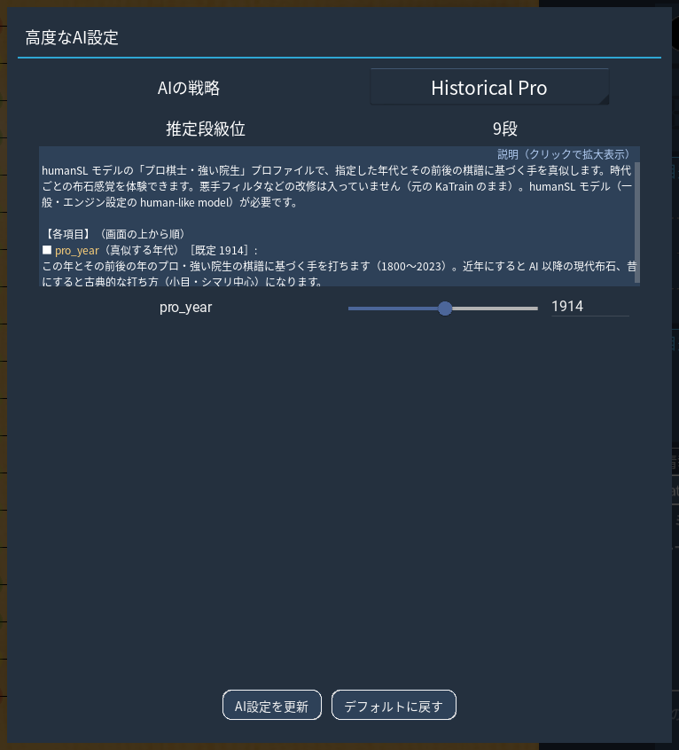
| 設定項目 | 既定 | 範囲 | 意味 | 上げると／下げると |
|---|---|---|---|---|
| pro_year | 1914 | 1800〜2023 | 真似する年代。 | 近年へAI 以降の現代布石に。昔へ古典的な打ち方（小目・シマリ中心）に |
攻撃型の戦略（力戦派・攻城・狩猟）
3 つとも「9段の人間の第一感（humanPolicy）に、戦略ごとの重みを掛けて抽選する」という同じ骨格です。違うのは何を重くするかとどこまで損な手を候補に残すか。 どれも最後に安全弁（最高重みの手が 4 目以上損なら最善手に差し替え）と、ヨセに入ったら 9 段の第一感に戻る処理が入っています。設計の詳しい解説は 力戦派・攻城・狩猟 — 戦略ガイド（開発者向け）にあります。
力戦派 ai:p:fighting
「まだどちらの地とも決まっていない場所」と「相手の石のそば」に重みを寄せて、接触戦を作りにいく戦略です。攻める対象を決めず、盤の状態だけから「戦いになりそうな場所」を選びます。
fighting_mode で 4 つの流儀を切り替えます。
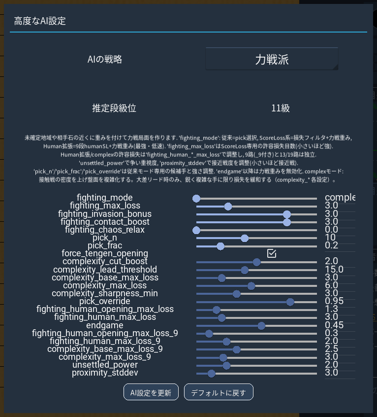
fighting_mode を決めてから、そのモードに効く項目だけ触ります。| モード（画面表示） | 土台 | 損失フィルタ | 性格 |
|---|---|---|---|
従来 classic | 第一感の上位から候補を抽出（盲点系と同じ） | なし | 棋力を落として戦う。目数の歯止めが無い。humanSL 不要 |
ScoreLoss系 scoreloss | 損失が小さいほど高い重み × 力戦重み | fighting_max_loss | 損失そのものを嫌う。humanSL 不要 |
Human拡張 human | 9段の humanPolicy × 力戦重み | 序盤 2.8 目・中盤 5.6 目（fighting_human_* で調整） | Human-like と同じ骨格で戦いに寄せる。最強・おすすめ。着手は遅め |
複雑化 complex | Human拡張 × 切り点ボーナス | リードに応じて最大 10 目まで開く | 盤面を紛れさせる。勝っているときほど勝負手を打つ |
全モード共通・力戦重みの設定
| 設定項目 | 既定 | 範囲 | 意味 | 上げると／下げると |
|---|---|---|---|---|
| fighting_mode | classic | 4 択 | 上表のモード。 | 迷ったら Human拡張 |
| unsettled_power | 2.0 | 1.0〜5.0 | 「未確定の場所」をどれだけ好むか（指数）。 | 上げる確定地・死んだ石の周りをほぼ無視し、争いの場所に集中。下げる普通の手も混ざる |
| proximity_stddev | 3.0 | 2.0〜10.0 | 相手の石からどれくらいの距離までを「近い」とみなすか（路）。 | 下げるくっつく手ばかりになる。2.0 未満にしないこと（下の 2 つのボーナスが効かなくなる）。上げる離れた手も候補に |
| fighting_contact_boost | 1.0 | 1.0〜5.0 | 相手の石に接触する手（ツケ・ハネ・ノゾキ等）の重み倍率。 | 上げる接触戦が増える。複雑化モードでは 2〜3 推奨 |
| fighting_invasion_bonus | 1.0 | 1.0〜5.0 | 相手の地（勢力圏）に入り込む手の重み倍率。 | 上げる打ち込み・荒らしが増える。contact_boost と両方 3.0 なら「相手の地で接触する手」は 9 倍 |
| force_tengen_opening | OFF | ON/OFF | 黒番の初手を天元にする。 | ON で「天元から戦う碁」に |
| endgame | 0.45 | 0.10〜0.75 | 盤のこの割合が埋まったら力戦重みをやめる（従来／ScoreLoss 系）。 | 下げる早めに普通の碁に戻る。Human拡張／複雑化では無視され、盤の 50% が固定 |
従来（classic）モードだけに効く項目
| 設定項目 | 既定 | 意味 | 上げると／下げると |
|---|---|---|---|
| pick_n / pick_frac | 10 / 0.2 | 候補に入れる手の数（固定数＋合法手の割合）。 | 上げる候補が増えて強く |
| pick_override | 0.95 | 第一感の最有力手の確率がこれ以上なら無条件で打つ。 | 下げる強く |
ScoreLoss系モードだけに効く項目
| 設定項目 | 既定 | 範囲 | 意味 | 上げると／下げると |
|---|---|---|---|---|
| fighting_max_loss | 3.0 | 0.5〜10.0 | 戦いを作るために許す損失（目）。Human拡張・複雑化には効きません。 | 上げる無理をしてでも殴り込む＝弱く。下げるおとなしく |
Human拡張・複雑化に効く「悪手フィルタ」の上限
9路と 13/19路、序盤と中盤以降で別々に持っています。既定は Human-like の悪手フィルタと同じ値です。
| 設定項目 | 既定 | 範囲 | 意味 | 上げると／下げると |
|---|---|---|---|---|
| fighting_human_opening_max_loss | 2.8 | 0.5〜6.0 | 13/19路・序盤（19路 50 手目まで）の損失上限（目）。 | 上げる序盤から乱暴に。下げる布石はまとも |
| fighting_human_max_loss | 5.6 | 1.0〜10.0 | 13/19路・中盤以降の損失上限。 | 上げる4.0 を超える手は安全弁で最善手に戻されがち＝実質の上限は 4 目付近。下げる強く |
| fighting_human_opening_max_loss_9 | 0.5 | 0.1〜2.0 | 9路・序盤（12 手目まで）。9路は 1 手の損が致命傷なので厳しめ。 | 同上 |
| fighting_human_max_loss_9 | 3.3 | 0.5〜6.0 | 9路・中盤以降。 | 同上 |
| fighting_chaos_relax | 0.0 | 0〜3.0 | Human拡張のみ。相手の地への接触手に限って、上限をこの目数だけ緩める。 | 上げる荒らしの手だけ多少損でも通す |
複雑化（complex）モードだけに効く項目
複雑化は「切り点（相手の連が 2 つ以上隣接する空点）」を優遇し、損失の上限をリードに応じて開くのが特徴です。
上限の考え方は 3 段構え: ①complexity_base_max_loss までは無条件で通す → ②そこから実効上限までは「局面が鋭い（scoreStdev が大きい）」かつ「本当に紛れる点」の手だけ通す → ③それ以上は捨てる。
実効上限は、リードが complexity_lead_threshold を超えると 10 目ぶんのリード幅をかけて complexity_max_loss まで直線的に上がります。
| 設定項目 | 既定 | 範囲 | 意味 | 上げると／下げると |
|---|---|---|---|---|
| complexity_cut_boost | 2.0 | 1.0〜5.0 | 切り点の重み倍率。 | 上げる切り・分断が増える |
| complexity_lead_threshold | 15.0 | 5〜30 | この目数以上リードしたら損失上限を緩め始める。 | 下げる少しの優勢でも勝負手を打ち始める（勝ちを落としやすくなる） |
| complexity_base_max_loss | 5.6 | 1.0〜10.0 | 13/19路。リードに関係なく常時開ける「ゲート付き」帯の上限。 | 上げる互角でもゲートを通った勝負手を打つ。fighting_human_max_loss と同じ値なら互角時は上乗せなし |
| complexity_max_loss | 10.0 | 1.0〜12.0 | 13/19路。大差リード時の損失上限（緩和の到達点）。 | 上げる大差のときの勝負手が大胆に |
| complexity_base_max_loss_9 | 3.3 | 0.5〜6.0 | 9路版の常時上限。 | 同上 |
| complexity_max_loss_9 | 6.0 | 1.0〜10.0 | 9路版の緩和上限。 | 同上 |
| complexity_sharpness_min | 3.0 | 1〜10 | ゲート通過に必要な「局面の鋭さ」（KataGo の scoreStdev）。 | 下げる穏やかな局面でも勝負手が通る。上げる本当に読み筋が割れた局面だけ |
攻城戦略 ai:siege
「背水の陣」。序盤はわざと損をして相手に地を譲り（Concede フェーズ）、相手の厚みがまだ不安定なうちに中盤で大石群ごと包囲して逆転を狙います（Attack フェーズ）。 フェーズは手数と攻める対象があるかで切り替わり、対象が無くなれば譲るフェーズに戻ります。
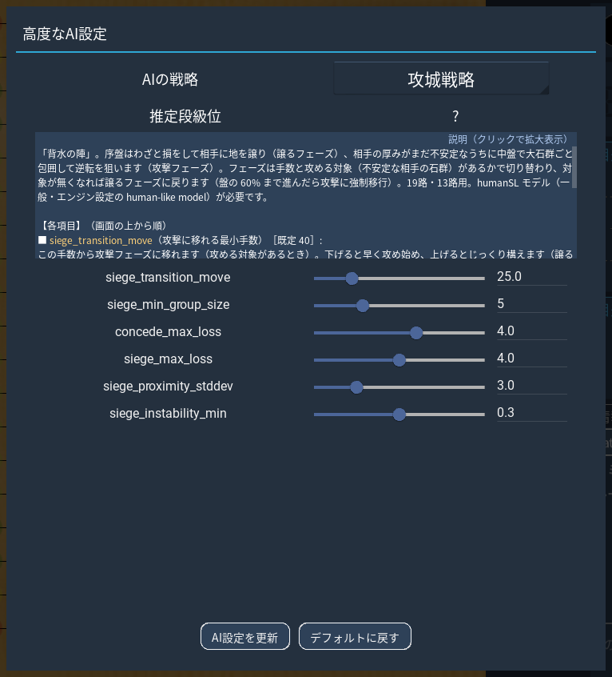
| 設定項目 | 既定（19路・13路共通） | 範囲 | 意味 | 上げると／下げると |
|---|---|---|---|---|
| siege_transition_move | 40 | 15〜60 | 攻撃フェーズに移れる最小手数。 | 下げる早く攻め始める。上げるじっくり構える（譲る期間が長い） |
| siege_min_group_size | 5 | 3〜10 | 攻撃対象にする相手の石群の最小の大きさ（石数）。 | 下げる小さい石も狙う。上げる大石だけ狙う |
| concede_max_loss | 4.0 | 1.0〜6.0 | 序盤（譲るフェーズ）で許す損失（目）。損の大きい手ほど重みが高いので上限近くの手が選ばれやすい。 | 上げるより大きく譲る（劣勢が深くなる）。下げる控えめ |
| siege_max_loss | 5.0 | 1.0〜7.0 | 攻撃フェーズで許す損失。 | 上げる無理攻めが増える。下げる安全な攻め |
| siege_proximity_stddev | 3.0 | 2.0〜6.0 | 攻撃の集中度（ターゲットからの距離の広がり、路）。 | 下げるターゲットに密着。上げる広く攻める |
| siege_instability_min | 0.3 | 0.1〜0.5 | ターゲットとみなす最小の「不安定さ」（1 − 地合推定の確からしさ）。 | 下げる安定した石も狙う。上げる本当に危ない石だけ |
狩猟戦略 ai:hunt
最初から攻めます。攻める対象を 2 種類持つのが特徴で、①相手の弱い石群（攻城と同じ検出）に加えて、②相手の勢力圏だがまだ確定していない場所（地合推定が 0.2〜0.7 の交点）を「侵入対象」として毎手探します。 石群が無い局面でも侵入対象はほぼ必ずあるので、事実上「常に攻めている」相手になります。追撃・注意フォーカス・死石回避など付属機構が最も多い戦略です。
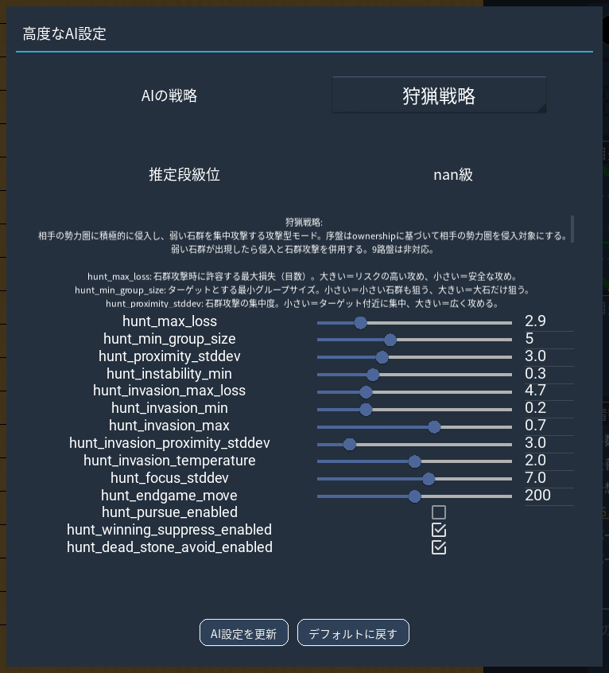
| 設定項目 | 既定（19路・13路共通） | 範囲 | 意味 | 上げると／下げると |
|---|---|---|---|---|
| hunt_max_loss | 6.0 | 1.0〜10.0 | 石群を攻めるときに許す損失（目）。劣勢（−6 目以下）では自動的に 4.0 で頭打ち。 | 上げる無理攻め。下げる手堅く |
| hunt_min_group_size | 5 | 2〜10 | ターゲットにする石群の最小石数。 | 下げる小さい石も追う |
| hunt_proximity_stddev | 3.0 | 1.5〜6.0 | 石群攻撃の集中度（路）。 | 下げる密着。上げる包囲網を広く |
| hunt_instability_min | 0.3 | 0.1〜0.8 | ターゲット判定の最小不安定度。 | 下げる安定した石も狙う |
| hunt_invasion_max_loss | 8.0 | 2.0〜12.0 | 侵入するときに許す損失。3 戦略で最も大きい上限。 | 上げる無謀な打ち込みが増える。下げる慎重 |
| hunt_invasion_min | 0.2 | 0.1〜0.5 | 侵入対象とする相手の地合推定の下限。 | 下げる薄い勢力圏にも入る |
| hunt_invasion_max | 0.7 | 0.4〜0.9 | 同・上限。 | 上げるほぼ確定地にも打ち込む（大損しやすい） |
| hunt_invasion_proximity_stddev | 3.0 | 2.0〜8.0 | 侵入点まわりの候補の広がり。 | 上げる侵入先が散る |
| hunt_invasion_temperature | 1.5 | 1.0〜3.0 | 侵入フェーズの抽選の「温度」。大きい損失手が実際に打たれる確率を直接上げる唯一の項目。 | 上げる下位候補も当たる＝多彩だが弱く。1.0 で重みどおり |
| hunt_focus_stddev | 7.0 | 3.0〜10.0 | 注意フォーカスの広がり。直前の着手と最も不安定なターゲットの 2 点から遠い手にペナルティ。 | 下げる今の戦場に集中（手抜きしない）。上げる広く見る |
| hunt_endgame_move | 200 | 150〜250 | 19路でヨセモード（9段の第一感で打つ）に切り替える手数。13路以下は盤の 50% 固定。 | 下げる早めに攻めをやめる |
| hunt_pursue_enabled | ON | ON/OFF | 攻め合い追撃。相手が勝負手を打っても手抜きせず詰め切る。 | OFF で攻め合いの途中でも大場に回ることがある |
| hunt_winning_suppress_enabled | OFF | ON/OFF | 15 目以上リードしているとき KataGo 最善手の重みを 0.3 倍にして一致率を下げる。 | ON で勝勢時の「AI っぽさ」が減る |
| hunt_dead_stone_avoid_enabled | ON | ON/OFF | 死んだ自分の石の周りをつつく無駄手を抑える。 | OFF で「死石を助けようとする」人間っぽい無駄手も混ざる |
狩猟戦略（一致率低減） ai:hunt_diverge
狩猟戦略と同じ棋風を保ちながら、評価レポートの「AI の最善手との一致率」を下げます。仕組みは Best-move dodge: 抽選で KataGo の最善手が選ばれたときだけ、
「損失が hunt_dodge_max_loss 以下」かつ「重み上位 hunt_dodge_top_n 位以内」の別の手のうち損失最小のものに差し替えます。該当が無ければ最善手のまま。
温度抽選は使わないので hunt_invasion_temperature はありません。注意フォーカスと死石回避は狩猟戦略と同じく働きますが、設定項目が無く固定です（フォーカスの広がりは 13路 5.0・19路 7.0、死石回避は ON）。
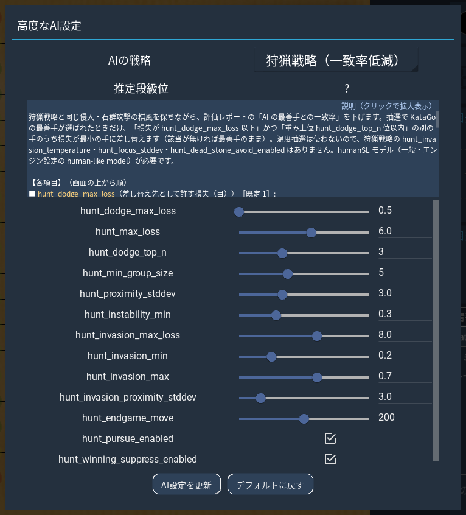
| 設定項目 | 既定 | 範囲 | 意味 | 上げると／下げると |
|---|---|---|---|---|
| hunt_dodge_max_loss | 1.0 | 0.5〜3.0 | 差し替え先として許す損失（目）。 | 上げる差し替えの機会が増えて一致率は下がるが、弱い手も混ざる |
| hunt_dodge_top_n | 3 | 2〜5 | 差し替え先を探す重み上位 N 手。 | 下げる自然な手だけが対象 |
| （その他） | 狩猟戦略と同じ（hunt_max_loss 〜 hunt_winning_suppress_enabled） | |||
AI らしさ（最善手との一致率）を下げる戦略
評価レポート（F3）の「AIの最善手との一致率」は、対局相手が AI かどうかを見分ける代表的な指標です。ここに挙げる戦略は人間らしさを保ったまま、この一致率を意図的に下げるためのものです。
AI一致率低減 ai:diverge_move
候補手のスコアを humanPolicy × (KataGo の順位 + 1)divergence_power で計算し、KataGo の順位が下の手ほど持ち上げて抽選します。損失が diverge_score_filter を超える手は除外。
目標は「最善手一致率 30% 以下・上位 5 手一致率 40% 以下・平均損失 1.0 目未満」です。
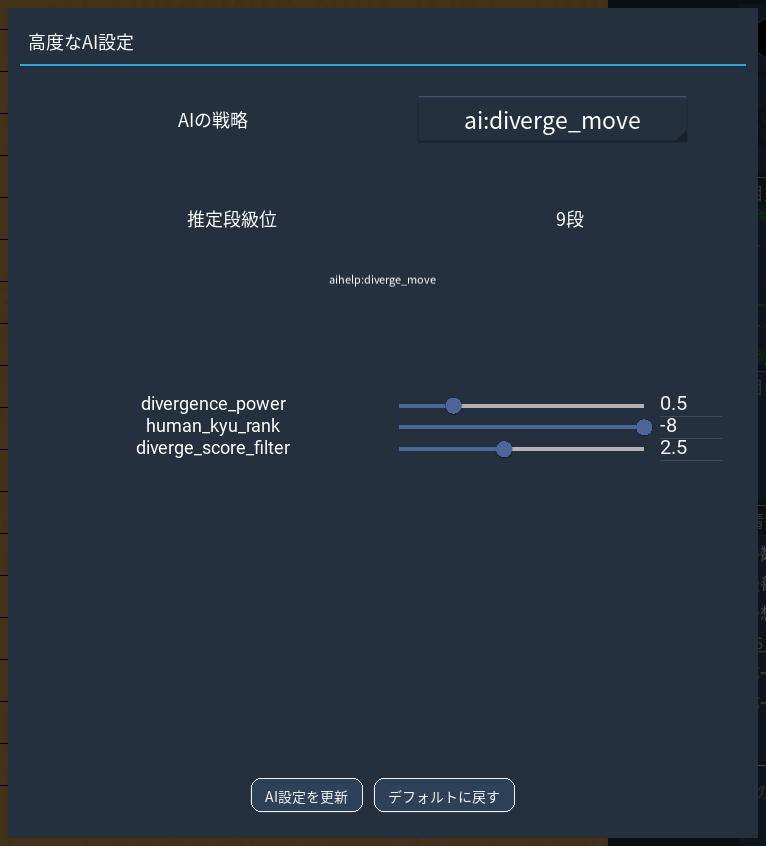
| 設定項目 | 既定 | 範囲 | 意味 | 上げると／下げると |
|---|---|---|---|---|
| human_kyu_rank | −8（9段） | 20級〜9段 | 土台にする人間モデルの段級位。 | 級側にすると弱く荒く |
| divergence_power | 0.5 | 0.3〜1.5 | 下位の手をどれだけ持ち上げるか。 | 上げる一致率が下がる（0.3 刻みで調整）。下げるHuman-like に近づく |
| diverge_score_filter | 2.5 | 1.0〜5.0 | 許す最大損失（目）。 | 上げるより損な手も混ざり一致率は下がるが弱くなる |
一致率追随（9路） ai:parity9
9路盤で、終局レポートの最善手一致率を目標値（既定 40%）まで下げつつ、勝ち切ることを狙います。仕組みは次の 4 段階です。
- いま最善手を打つと目標を超えるかを先読みで判定（レートゲート）。超えないなら最善手。
- 超えるなら、候補のうち着手後の勝率が
parity9_min_winrateを割らない手だけを残す（安全条件はこれ 1 つ。相手の最善応手込みの値なので「次の一手で逆転されない」保証）。 - 残った手のうち、最も損の少ない手から
parity9_cost_slack目以内の帯を作り、その中で humanPolicy が最大の手を選ぶ（安さを最優先＝コストと不自然さが同時に下がる）。 - ヨセ（
parity9_endgame_move手以降かつ未確定点がparity9_unsettled_max以下）に入ったら、損失上限をparity9_yose_max_loss（既定 0.1 目）に絞り、ダメ詰めや 1 目ヨセの手順入れ替えだけ許す。
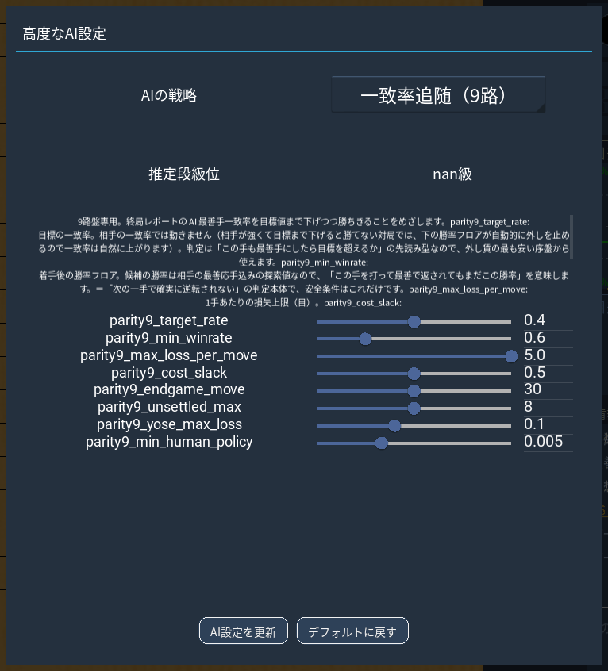
| 設定項目 | 既定 | 範囲 | 意味 | 上げると／下げると |
|---|---|---|---|---|
| parity9_target_rate | 40% | 20〜60% | 目標の最善手一致率。相手の一致率には連動しない絶対値。 | 下げる外す手番が増えるが、9路は「9段も同じ手を打つ」局面が多く 20% 台は不自然 |
| parity9_min_winrate | 70% | 50〜90% | 着手後の勝率フロア。唯一の安全条件。 | 上げる接戦ではほとんど外せず一致率が上がる（勝ちを優先）。下げる負けるリスクと引き換えに一致率が下がる。黒番の序盤は勝率 50% ちょうどなので 50% 未満にしないと外せない |
| parity9_max_loss_per_move | 5.0 | 0.5〜5.0 | 1 手あたりの損失上限（目）。 | 下げる（例 4.0）高価な外しが消える |
| parity9_cost_slack | 0.5 | 0〜2.0 | 最安の外し手から何目まで「同じくらい安い」とみなして人間らしさで選ぶか。 | 0 で常に最安。上げる人間らしい手を優先するぶん損が増える |
| parity9_min_human_policy | 0.5% | 0〜2% | 採用候補の humanPolicy 下限。 | 上げる（1%）9段が打たない手が消えて一致率は上がる |
| parity9_endgame_move | 30 | 22〜38 | ヨセ判定の手数側の条件。 | 下げる早くヨセ扱いになり外しが減る |
| parity9_unsettled_max | 8 | 4〜12 | ヨセ判定の「未確定点（地合推定が ±0.5 未満の交点）」上限。手数条件との AND。 | 上げる早くヨセ扱いに |
| parity9_yose_max_loss | 0.1 | 0〜0.5 | ヨセに入ってからの 1 手損失上限。 | 0 でヨセは完全に最善手固定（一致率の最大の押し上げ要因）。上げるヨセを間違え始める |
擬態（13路） ai:mimic13
13路盤で、相手より低い最善手一致率を保ったまま勝つことを狙います。わざと外しているとバレないよう、外す先は「9段が実際に打ちそうな手」か「相手を騙す罠」に限ります。
- 9段の第一感が最善手に集中している局面（humanPolicy が
mimic13_dominant_hp以上）は最善手。ここで外すと露骨なため、罠も打ちません。 - それ以外は候補を子局面まで読み、不一致 1 回の値段＝「検証済み損失 −（相手の期待損失 E の上積み）」を出します。値段が負の手は期待値プラスの罠で、相手の悪手を誘って外しの原資を作ります。
- 払える上限はリード連動: 余剰（リード −
mimic13_reserve）が無ければmimic13_free_lossまで、あれば余剰 ×mimic13_spend_rate（天井mimic13_max_loss）。1 目以上負けているときは値段が負の手しか打ちません。 - 上限内で最も安い手を選び、
mimic13_cost_slack以内で並ぶ手があれば最も人間らしい手にします。資格は「人間らしい手」（humanPolicy が下限以上）か「罠」（E の上積みがmimic13_trap_min_delta_e以上）。 - ヨセ（
mimic13_endgame_move手以降かつ未確定点がmimic13_unsettled_max以下）は Human-like 9段へ委譲。リードが確保ラインを割った手番だけ最善手で勝ちを守ります。
| 設定項目 | 既定 | 範囲 | 意味 | 上げると／下げると |
|---|---|---|---|---|
| mimic13_max_loss | 2.0 | 0.5〜5.0 | 1 手で失ってよい目数の天井（支払い上限もこれを超えない）。 | 上げる大差のとき外せる手番が増えて一致率は下がるが、外しがはっきりした悪手に見えやすく、リードの減りも速い。下げる小さな損の外しだけになり、勝っている碁でも最善手が増える |
| mimic13_reserve | 3.0 | 0〜10 | 確保するリード（目）。これを超えた分（余剰）だけを外しの代金に使う。ヨセを 9段に任せる条件でもある（これ未満のヨセは最善手）。 | 上げる勝ちは堅いが余剰ができにくく一致率が下がりにくい。ヨセも最善手が増える。下げる早くから代金を払って外すので一致率は下がるが、僅差の決着が増え接戦を落とすリスクが上がる |
| mimic13_spend_rate | 0.25 | 0.1〜1.0 | 1 手の支払い上限＝余剰 × この値（天井は損失上限）。余剰 4 目なら 0.25 で 1.0 目、0.5 で 2.0 目。 | 上げる少しのリードでも高い外しを買うので一致率は下がるが、リードをすぐ使い切って確保ライン付近の碁になりやすい。下げる大きくリードするまでタダ同然の外ししか打たない |
| mimic13_free_loss | 0.3 | 0〜0.5 | リードが確保ライン以下（ただし 1 目以上負けてはいない）でも払う値段（目）。 | 上げる接戦でも外す手番が増えるが、小さな損が積み重なって接戦を落としやすい。下げる接戦の外しが減る。0 で接戦は「値段が 0 以下＝期待値で得をする罠」だけ |
| mimic13_min_winrate | 40% | 30〜50% | 外した後の勝率（相手の最善応手込み）がこれを割る手は打たない。 | 上げる安全だが互角の局面でほとんど外せない（50% にすると黒番の序盤は勝率が 50% 弱なので全く外せない）。下げる少し不利でも罠や外しを打つようになり、逆転負けのリスクが上がる |
| mimic13_dominant_hp | 80% | 60〜95% | 9段が最善手を選ぶ確率（humanPolicy）がこれ以上の局面は外さない（その手番は追加の読みをしないので即打ち）。 | 上げる「誰でもそこに打つ」局面でも外すようになり一致率は下がるが、わざとらしさが増し 1 手も遅くなる。下げるより慎重で自然。そのぶん一致率は上がる |
| mimic13_min_human_policy | 5% | 1〜10% | 外す先を「人間らしい手」と認める最低ライン（9段がその手を選ぶ確率）。 | 下げる外せる手番が増えて一致率は下がるが、9段があまり打たない珍しい手が混ざる。上げるはっきり人間らしい手にしか外さず、一致率は上がる |
| mimic13_natural_ratio | 0.2 | 0.1〜0.5 | 同じ下限を「9段の第一感トップの何割以上か」でも課す（絶対値とこの比の厳しいほうが効く）。 | 上げる第一感と同じくらい有力な手にしか外さない（自然だが外せる手番が減る）。下げる第一感がはっきりした局面でも 2 番手・3 番手へ外しやすい |
| mimic13_trap_min_delta_e | 0.5 | 0.3〜1.5／OFF | 相手の期待損失 E が最善手よりこの目数以上増える手は「罠」として人間らしさの条件を免除する。 | 下げる罠扱いの手が増えて一致率は下がるが、E の誤差（0.2〜0.4 目）を罠と誤認して珍しいだけの手が混ざりやすい。上げるはっきり大きい罠だけ免除。OFF で人間らしい手にしか外さない（罠の効果は値段の割引として評価に残る） |
| mimic13_cost_slack | 0.3 | 0〜1.0 | 最安の手からこの目数以内に並ぶ候補を同じ安さとみなし、その中で最も人間らしい手を選ぶ。 | 上げる人間らしさ優先になり、1 回の外しに払う目数が少し増える（支払い上限は超えない）。0 で常に最安 |
| mimic13_probe_extra | 4 | 0〜6 | 罠を探すために、損失の大きい候補まで広げて読む手の数。 | 上げる罠を見つけやすいが 1 手が遅くなる（1 手ぶんにつき約 0.1 秒）。下げる速くなるが、少し高い代金で大きく騙せる罠を見落とす |
| mimic13_endgame_move | 85 | 65〜105 | この手数以降、かつ未確定点が下の上限以下になったらヨセとして 9段に委譲（一度入ったら戻らない）。 | 上げる中盤扱いが長く続き一致率は下がるが、ヨセに近い局面での外しは気づかれやすい。下げる早くヨセに入り一致率は上がる。85 未満にすると、その間の 9段は候補からランダムに選ぶので数目損する手が混ざる |
| mimic13_unsettled_max | 16 | 8〜24 | 盤上の未確定点（どちらの地か決まっていない交点）がこの数以下になったらヨセと判定（手数条件との AND）。 | 上げる早くヨセ扱いになり一致率が上がる。下げる盤面がほぼ確定するまで中盤の外しを続ける |
mimic13_reserve を下げる／mimic13_spend_rate・mimic13_max_loss・mimic13_dominant_hp・mimic13_endgame_move を上げる（どれも勝ちの安全度や自然さと引き換え）。接戦を落とす・負けが出る:
mimic13_reserve と mimic13_min_winrate を上げる／mimic13_free_loss を下げる。外しがわざとらしい:
mimic13_dominant_hp と mimic13_max_loss を下げる／mimic13_min_human_policy・mimic13_natural_ratio を上げる／mimic13_trap_min_delta_e を上げるか OFF。1 手が遅い:
mimic13_probe_extra と mimic13_dominant_hp を下げる。
韜晦（9路 / 13路 / 19路） ai:veil9 / ai:veil13 / ai:veil19
勝ちを最優先にしたまま、評価レポートの自分の最善手一致率を目標（veil*_target_rate）まで下げる戦略です。
相手より低くすることは目指しません（相手の一致率はログに出すだけ）。3 つは同じ仕組みで、盤サイズに合わせた既定値だけが違います
（設定は veil9_* / veil13_* / veil19_* と別々に保存）。対応しない盤サイズで選ぶと常に最善手を打ちます。
- ほぼ損失ゼロの外し（同値外し）は、一致率に関係なく常に打ちます（損失が
veil*_free_loss以下で、1 手の勝率低下もveil*_free_wr_drop以下の手）。リードに関係なく接戦や劣勢でも打ち、下の勝ちの安全条件（veil*_reserve・veil*_min_winrate）は掛かりません。守りは 1 手の勝率低下の上限（既定 3%。ヨセで着手後のリードがveil*_reserveを割るなら 1%）と、設定したときだけ効く接戦中の合計の上限（veil*_close_drift_cap・既定 OFF）です。 - 損をする外しは、一致率が目標を超えている間だけ、リードの余剰（リード −
veil*_reserve）から払います。1 回の上限は余剰 ×veil*_spend_rate（天井はヨセ前veil*_max_loss・ヨセveil*_yose_max_loss）。外した後もリードがveil*_reserve以上残り、着手後勝率がveil*_min_winrateを割らないことが条件です（勝ちの安全条件。罠も同じ）。 - 9段の第一感が最善手に集中している局面（明らかな一手）は、一致率が目標を超えているときだけ、
veil*_dominant_max_lossまでの損失で外します。 - 外す先は 9段が実際に打ちそうな手に限り、候補を着手後の局面まで読んで確かめ、最も安い帯（
veil*_cost_slack）の中で最も人間らしい手を選びます（決着局面の同値外しも、最善手とその手の 2 手だけ読んで確かめてから打ちます。終局間際の手の入れ替えは読みを省き、通常の解析の値で決めます）。 - ヨセも自分で打ち（委譲しない）、盤上に 0.5 目以上の手が無い終局間際はダメ詰めの順番を入れ替える程度（0.1 目・接戦 0.05 目まで）に留めます。
- 失着の層（
veil*_blunder_mode・既定 OFF）は、9段でも迷う局面（失着の手の humanPolicy が最善手のveil*_blunder_hp_ratio倍以上かつ 15% 以上）で、通常の支払い上限（veil*_max_loss）を超える人間らしい失着をまれに打ちます。打った後もリードがveil*_reserve＋ 5 目以上・勝率 95% 以上残る手だけを、深い読み（1500 visits）で確かめて打ちます。ヨセと接戦では打ちません。LOG は条件を満たす手を探してログに書くだけで打たず、ON は条件を満たした手番の半分で、1 局veil*_blunder_per_game回まで打ちます。一致率はほとんど変わりません。 - 最善手しか無い手番の外し（
veil*_forced_mode・既定 OFF）は、ふつうの外しでは最善手しか打てない手番でも、9段が打ちそうな手のうち、打った後もリードがveil*_forced_min_lead目以上・勝率がveil*_forced_min_winrate以上残り、損がveil*_forced_max_loss目以下（ヨセはveil*_yose_max_loss）の手があれば打ちます。一致率が目標を超えている間だけ動きます。接戦でもリードが残る範囲で外すので、ON にするとまれに負けます（20 局に 1 局ほどを許す設定です）。9段がほぼ必ず打つ明らかな一手は外しません。LOG は打つ手をログに書くだけで最善手を打ちます。
| 設定項目 | 既定（13路） | 範囲 | 意味 | 上げると／下げると |
|---|---|---|---|---|
| veil*_target_rate | 30%9路 40%・19路 30% | 15%〜50% | 目標一致率（この手も一致させた場合の一致率がこれを超えている間だけ、損をする外しと明らかな一手の外しを許す。超過 10pt で全開・15% 以下へは払わない） | 上げる外しが減り勝ちが堅い。下げる外しが増えるぶんリードを払う |
| veil*_reserve | 59路 3・19路 7 | 1〜10 | 損をする外し・罠の後にも残すリード（目）＝勝ちの安全条件 | 上げる勝ちは堅いが外せる手番が減る。下げる外しが増えるが僅差の決着が増える |
| veil*_min_winrate | 85%9路 85%・19路 85% | 50%〜95% | 損をする外し・罠の着手後勝率フロア＝勝ちの安全条件 | 上げる安全だが外しが減る。下げる不利寄りの局面でも払って外す |
| veil*_free_loss | 0.49路 0.2・19路 0.3 | 0〜0.5 | 同値外し（一致率に関係なく常に打つ外し）の損失の上限（目）。劣勢・一致率 15% 以下では 0.1 | 上げる外しが増えるが小さな損が積み重なる。下げる序盤・接戦の外しが減る |
| veil*_free_wr_drop | 3%9路 3%・19路 3% | 0%〜5% | 同値外しで許す1手の勝率低下（着手後勝率 97% 以上は免除・ヨセで reserve を割るなら 1%） | 上げる接戦でも外しが増える。下げる接戦の外しが減る |
| veil*_close_drift_cap | OFF9路 OFF・19路 OFF | OFF／0.5〜3.0 | 接戦中の同値外しの損失の1局あたり合計の上限（目）。OFF で上限なし | 値を入れる接戦の外しを合計で頭打ちにする。OFF1手ごとの勝率条件だけで守る |
| veil*_spend_rate | 19路 0.5・19路 0.5 | 0.25〜1 | 損をする外し1回に使う余剰（リード − reserve）の割合 | 上げる少ないリードでも高い外しを買う。下げる大きくリードするまで安い外しだけ |
| veil*_max_loss | 69路 3・19路 6 | 9路 1〜5・13路 2〜6・19路 3〜8 | 1手の支払い上限（目・ヨセ前）。罠の損失の上限も兼ねる | 上げる大差で外せる手番が増えるが緩みが見えやすい。下げる小さな損の外しだけ |
| veil*_yose_max_loss | 29路 1・19路 2 | 0〜3 | 1手の支払い上限（目・ヨセ）。0 で同値外しだけ | 上げるヨセでも外せるが目立ちやすい。下げるヨセは最善手寄り |
| veil*_dominant_hp | OFF9路 80%・19路 80% | 60%〜95%／OFF | 9段が最善手を選ぶ確率がこれ以上＝明らかな一手（一致率が目標を超えているときだけ外す）。OFF で判定しない | 上げる明らかな局面でも外しやすい。下げる慎重で自然 |
| veil*_dominant_max_loss | 39路 1.5・19路 3 | 0.5〜4 | 明らかな一手で外すときの支払いの上限（目・通常の上限を絞るだけ） | 上げる明らかな局面でも高い外し。下げるほぼ同値の外しだけ |
| veil*_min_human_policy | 5%9路 5%・19路 5% | 1%〜10% | 外す先に要る 9段の humanPolicy（絶対床） | 下げる外せる手番が増えるが珍しい手が混ざる。上げるはっきり人間らしい手だけ |
| veil*_natural_ratio | 0.19路 0.2・19路 0.2 | 0.1〜0.5 | 外す先に要る humanPolicy の第一感比（相対床・明らかな一手の局面では使わない） | 上げる第一感に近い有力手だけ。下げる2番手・3番手へも外す |
| veil*_cost_slack | 0.39路 0.3・19路 0.3 | 0〜1 | 最安の外しからこの目数以内を同じ安さとみなし、その中で最も人間らしい手を打つ | 上げる人間らしさ優先で少し多く払う。0 で常に最安 |
| veil*_trap_mode | OFF9路 OFF・19路 OFF | ON/OFF | 罠（相手の期待損失 E を増やす手）の上乗せ層（A/B 測定用）。値段は損失 − 0.5 × E の上積み、安全条件は割り引かない | ON罠も外し先にする（素直な外しより 0.3 目以上安いときだけ替える） |
| veil*_trap_min_delta_e | 0.59路 0.5・19路 0.7 | 0.3〜1.5 | 罠とみなす E の上積み（目） | 下げる罠が増えるが E の誤差を拾いやすい。上げる大きい罠だけ |
| veil*_blunder_mode | OFF9路 OFF・19路 OFF | OFF/LOG/ON | 失着の層（9段でも迷う局面で、通常の支払い上限を超える人間らしい失着をまれに打つ）。LOG は条件を満たす手を探してログに書くだけ（打たない・頻度の確認用） | ON条件を満たした手番の半分で失着を打つ（一致率はほとんど変わらない） |
| veil*_blunder_max_loss | 109路 6・19路 15 | 9路 4〜8・13路 8〜15・19路 8〜20 | 失着1回で許す損失の上限（目・深い読みの値）。max_loss を超える損失だけが失着（max_loss 以下にすると失着は出ない） | 上げる大きな失着も出るが、打てるのは大差の局面だけ（打った後にも reserve ＋ 5 目のリードが要る） |
| veil*_blunder_per_game | 19路 1・19路 1 | 1〜3 | ON のとき1局で打つ失着の上限（回） | 上げる1局に2回以上打つこともある |
| veil*_blunder_hp_ratio | 70%9路 70%・19路 70% | 50%〜100% | 失着の手の 9段 humanPolicy ÷ 最善手の humanPolicy の下限（9段自身が迷う局面の条件） | 上げる9段でも本当に迷う局面だけ（頻度が下がる）。下げる頻度は上がるが不自然な失着が混ざる |
| veil*_forced_mode | OFF9路 OFF・19路 OFF | OFF/LOG/ON | 最善手しか無い手番の外し（通常の外しでは最善手しか打てない手番でも、打った後にリードと勝率が残る 9段らしい手があれば打つ）。LOG は打つ手をログに書くだけ（最善手を打つ） | ON一致率が下がる。接戦でもリードが残る範囲で外すので、まれに負ける（20 局に 1 局ほどを許す設定） |
| veil*_forced_min_lead | 29路 1・19路 3 | 9路 0.5〜3・13路 1〜5・19路 2〜8 | 最善手しか無い手番で外した後に残すリード（目。打つ前のリード − 損と、打った後の読みの両方） | 上げる接戦で外さなくなる（負けにくいが一致率は下がりにくい） |
| veil*_forced_min_winrate | 70%9路 70%・19路 70% | 60%〜85% | 最善手しか無い手番で外した後の勝率の下限（読みで確かめた値） | 上げる負けにくいが一致率は下がりにくい |
| veil*_forced_max_loss | 109路 5・19路 15 | 9路 3〜8・13路 6〜15・19路 8〜20 | 最善手しか無い手番で1手に許す損の上限（目・読みで確かめた値。ヨセは yose_max_loss） | 上げる大差で大きく緩めて一致率が下がる（6 目を超える損の手も出る） |
veil13_reserve・veil13_min_winrate はそのままで、支払いの上限・1 回に使う余剰の割合・明らかな一手・自然さの相対床・同値外しの閾値に関わる 7 項目をゆるめた設定。ほかの項目は設計時の初期値のまま）。9路・19路は設計時の初期値のままの未校正の値です。実戦での確認はこれからです。13路の既定の設定の一致率は測るたびに 42〜47%（平均約 45%。設計時の初期値は約 52%）で、目標の 30% には届きません。ほかに候補が無い・自然な別の手が無い・接戦で安全な外しが無い、といった最善手を打つしかない手番が 4 割強あり、それが一致率の下限になっています（リードの余裕が足りないためではありません）。相手は 1級〜3段を模したボットで大差の対局が多いので、接戦での勝ちの安全は別に測りました。4 目不利から HumanStyle 9段と 20 局打ち、既定の設定で 20 局すべて勝ち、自分の手で勝率が 50% を割った回数は 0.05 回/局でした（同じ条件で打った難解＋13路は 1.95 回/局・1 敗）。
失着の層を ON にした測定では、通常の相手との 20 局で失着は 0.20 回/局（深い読みの損失 6.8〜9.8 目）で、20 局すべて勝ち、一致率は OFF とほとんど変わりませんでした。接戦の測定（上と同じ 4 目不利の条件）では失着は 1 回だけで、19 勝 1 持碁でした。持碁の直接の原因は決着局面の同値外しの読み落とし（ほぼ損の無い手のはずが約 16 目の損）ですが、その前に打った失着（約 5 目）が無ければ約 4 目残って勝っていた計算で、失着も重なっていました。読み落としは、打つ前に 2 手だけ読んで確かめるよう直しました（直した後の接戦の測定はまだです）。どれも 20 局ずつの無人対局での測定です。
目差をコントロールする戦略（持碁）
Kata持碁 ai:jigo
target_score〜target_score_max 目の僅差で勝つことを目指します。元の KaTrain の KataJigo は「相手のミスに自分もミスで応じる」露骨な手抜きをしましたが、
改修版は Human-like と同じ 2 段階解析で「1 手あたり max_loss_per_move 目以下・humanPolicy が min_human_policy 以上」の手だけから選ぶので、
人間らしくない悪手でわざと負けに行くことはありません。
選び方の基本: リードが目標未満なら「目標に最も近づく手」（実質最善手）、目標の範囲内なら jigo_mode に従い、範囲を超えていれば目標に最も近づく（＝少し緩める）手。
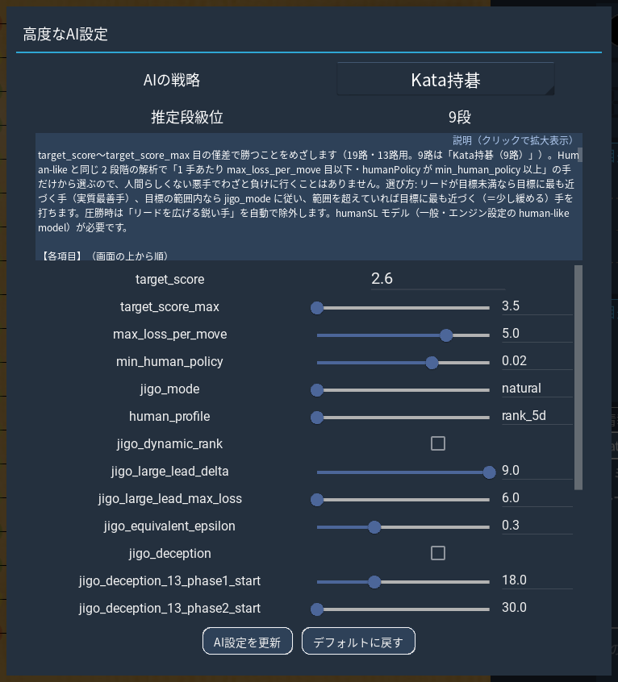
| 設定項目 | 既定 | 範囲 | 意味 | 上げると／下げると |
|---|---|---|---|---|
| target_score | 0.5 | 数値入力 | 狙う目差（自分から見て何目勝つか）。 | 上げる大きめに勝ちにいく |
| target_score_max | 10.0 | 5 / 10 / 15 | この目差までは「範囲内」とみなす。 | 下げる早くから手を緩め始める |
| max_loss_per_move | 5.6 | 3.0〜7.0 | 1 手あたり許す損失（目）。 | 下げる手加減が効かず目差が広がりやすい。上げる目標への収束は良いが不自然な手が増える |
| min_human_policy | 2% | 0.5〜5% | 候補の humanPolicy 下限。内部で 0.5% 未満には落ちない。 | 下げる人間が打たない手まで候補に |
| jigo_mode | natural | natural / maintain | 範囲内での打ち方。natural＝普通に人間らしく打つ、maintain＝常に目標へ寄せる。 | maintain は目差が安定するが手抜きが目立つ |
| human_profile | rank_9d | 5段 / 7段 / 9段 | humanSL の段位。 | 相手が弱いなら 7段・5段に |
| jigo_dynamic_rank | OFF | ON/OFF | リード差が 5 目超で 1 段、15 目超で 5段まで自動降格。 | ON で弱い相手にも目差が収束しやすい |
| jigo_large_lead_delta | 5.0 | 3〜10 | 「圧勝」とみなす目差（target_max ＋この値）。 | 下げる早めに圧勝モードへ |
| jigo_large_lead_max_loss | 8.0 | 6〜10 | 圧勝時に一時的に緩める損失上限。 | 上げる大差を早く縮める |
| jigo_equivalent_epsilon | 0.5 | 0〜1.0 | 「目標に最も近い手」から何目以内を同点扱いにして humanPolicy で選ぶか。 | 0 で常に最接近手（一本道）。上げる自然だが目差がぶれる |
| jigo_deception | OFF | ON/OFF | 油断誘発。序中盤にわざと少し劣勢を保ち、終盤で逆転する。19路は手数固定（Phase1 30手〜／Phase2 80手〜／Phase3 150手〜）、13路は下の 5 項目で調整。±5 目を超えたら安全弁で Phase3 へ。 | ON で「終盤に追い上げてくる人間」らしい展開に |
| jigo_deception_13_phase1_start | 17 | 10〜35 | [13路] 控えめに打ち始める手数。 | Phase1 < Phase2 < Phase3 の順に。Phase3 を早めると挽回が間に合いやすい |
| jigo_deception_13_phase2_start | 44 | 30〜70 | [13路] 目標へ戻し始める手数。 | |
| jigo_deception_13_phase3_start | 83 | 70〜110 | [13路] 通常の持碁に復帰し勝ちにいく手数。 | |
| jigo_deception_13_phase1_target | −2.0 | −1〜−4 | [13路] Phase1 で保つ目差（負＝劣勢）。 | |
| jigo_deception_13_phase2_target | −1.0 | −0.5〜−2 | [13路] Phase2 の中間目標。 | |
| jigo_force_sanrensei | OFF | ON/OFF | 19路の序盤に星打ちを強制（黒＝三連星、白＝二連星。相手が星なら対角の隅）。妨害されたら通常に戻る。 | ON で布石が「星の碁」に固定 |
| jigo_endgame_humanstyle | OFF | ON/OFF | ヨセは 9 段で打つ。ヨセ切替手数以降、目差が target_score 以上の手番から目標追従をやめ Human-like 9段に丸ごと委譲（戻らない）。ヨセの手抜きは相手から見て露骨なので、それを止める。 | ON で最終目差は目標より広がりうるが自然 |
| jigo_endgame_move | 150 | 120〜200 | [19路] 上の切替手数。 | 下げる早く 9 段に委譲 |
| jigo_endgame_move_13 | 85 | 55〜90 | [13路] 同上。 |
Kata持碁（9路） ai:jigo9
9路盤専用の持碁です。9路に無関係な上級設定（human_profile＝9段固定・dynamic_rank・large_lead・epsilon）を取り除き、油断誘発の Phase を 9路の短い対局長に合わせて調整できます。 9路は終局が早いので Phase3（挽回開始）を早めに設定するのがコツです。
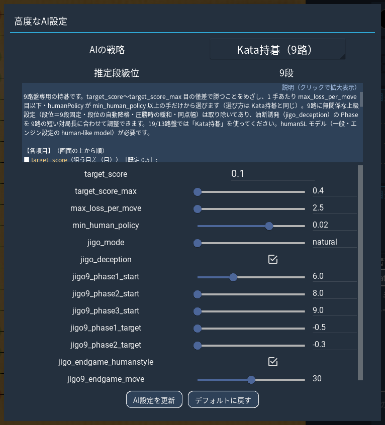
| 設定項目 | 既定 | 範囲 | 意味 | 上げると／下げると |
|---|---|---|---|---|
| target_score | 0.5 | 数値入力 | 狙う目差。 | |
| target_score_max | 5.0 | 5 / 10 / 15 | 範囲の上限。9路は 10 目で実質勝勢なので 5.0。 | |
| max_loss_per_move | 3.3 | 3.0〜7.0 | 1 手の損失上限（9路の悪手フィルタと同値）。 | 上げる9路では 1 手で勝負が決まるので慎重に |
| min_human_policy | 2% | 0.5〜5% | humanPolicy 下限。 | |
| jigo_mode | natural | natural / maintain | 範囲内での打ち方。 | |
| jigo_deception | OFF | ON/OFF | 油断誘発を有効化。 | |
| jigo9_phase1_start | 6 | 4〜10 | 控えめに打ち始める手数。 | 既定（6 / 16 / 30・−1.5 / −0.5）は 9路の対局長 40〜60 手に合わせた値 |
| jigo9_phase2_start | 16 | 12〜24 | 目標へ戻し始める手数。 | |
| jigo9_phase3_start | 30 | 26〜38 | 通常の持碁に復帰する手数。 | |
| jigo9_phase1_target | −1.5 | −1〜−2.5 | Phase1 で保つ目差。 | |
| jigo9_phase2_target | −0.5 | −0.5〜−1.5 | Phase2 の中間目標。 | |
| jigo_endgame_humanstyle | OFF | ON/OFF | ヨセは 9 段で打つ（19/13路と同じ）。 | |
| jigo9_endgame_move | 30 | 22〜38 | ヨセ切替手数。 |
難解（9路 / 13路 / 19路）
難解 ai:enigma9 / ai:enigma13 / ai:enigma19
序盤〜中盤は、厳しい損失上限の内側で「相手が正しく応じることが最も難しい手」へ積極的に外し、相手が研究してきた定跡・手筋を使わせません。
3 つは同じ仕組みで、盤サイズに合わせた既定値だけが違います（設定画面では enigma9_* / enigma13_* / enigma19_* と別々に保存）。
対応しない盤サイズで選ぶと常に最善手を打つだけになります。
難解さの測り方
候補手ごとに「その手を打った後の局面」を解析し、次の合計（net）が最も大きい手を選びます。KataGo 最善手も同じ尺度で採点し、*_net_margin 以上上回る挑戦者だけが採用されます。
- E（期待お仕置き）: 9段の人間がその局面で打ちそうな応手の分布で重み付けした、相手の期待損失。「並みの応手だと大損する」局面ほど高い。
- 応手の見つけにくさ: 十分な応手（損 0.3 目以下）がどれも humanPolicy の低い手になっている（正解が見えない）ボーナス。
- 自手の意外さ: 自分の手そのものが定跡外（humanPolicy が低い）ボーナス。ヨセでは使わない（一本道のヨセでは「人間が打たない手」にしかならないため）。
- − 自分の損失: 検証済みの損失（目）を引く。
攻め合いが 1 手差になる形は「相手の自然な応手が攻め合いに負ける」局面そのものなので E が自動的に高くなり、安全条件（損失上限と着手後勝率フロア＝どちらも相手の最善応手込み）が「間違えなければ勝てる場合のみ」を担保します。
3 つの局面フェーズ
| 局面 | 損失上限（cap） | ふるまい |
|---|---|---|
| 互角〜少し優勢 | *_max_loss | 上限内で最も難解な手へ外す。候補が無ければ最善手 |
| 勝勢（リード − 目標差 > max_loss） | *_large_lead_max_loss まで緩和 | 余剰リードを予算にして勝負手を打ち、損失の重みも予算に反比例して割引。リードが縮むと連続的に通常へ戻る＝勝ちは維持したまま一致率の異常な高さを解消 |
ヨセ（*_endgame_move 手以降かつ未確定点 ≤ *_unsettled_max・以後固定） | min(max_loss, リード − *_target_score) | 目標差を超える余剰だけを外しに使い、余剰が無ければ最善手で目標差の勝ち〜持碁を確保 |
| 劣勢 | — | 最善手で粘るだけ（勝てない碁は僅差で負けてよい） |
| 終局帯（盤上に 0.5 目以上の手が無い） | — | 難解さの採点はせず、9 段の人間の終局処理（パス・ダメ詰め・死石の取り込み）に倣う |
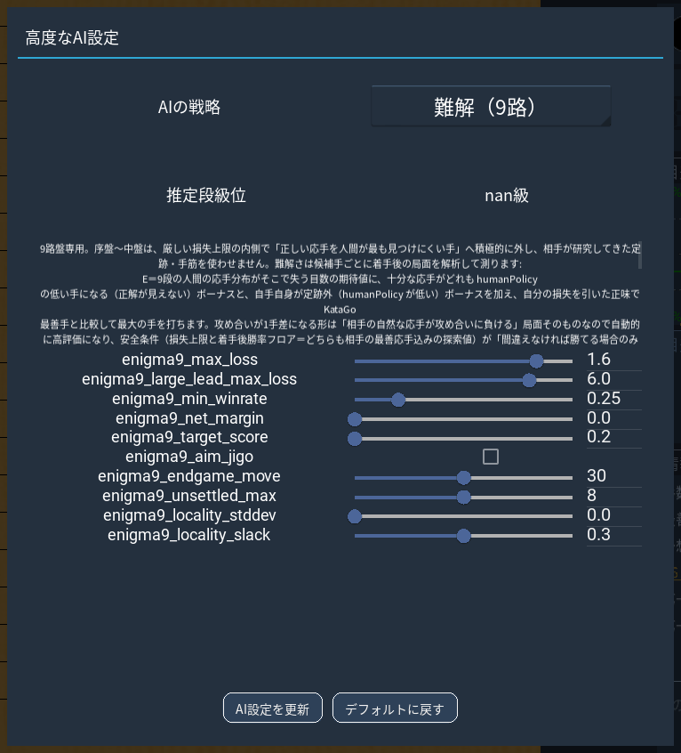
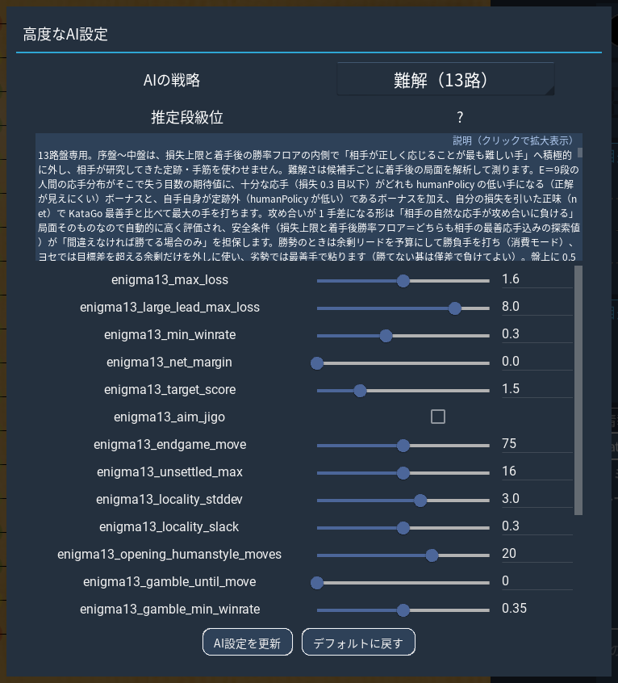
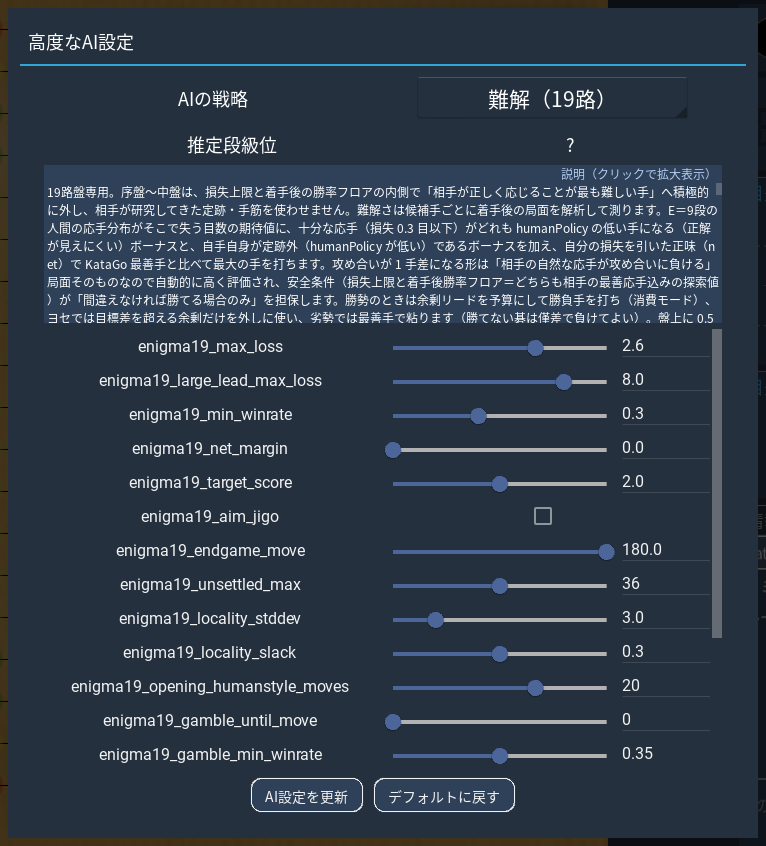
| 設定項目（* は 9 / 13 / 19） | 既定 9路 | 既定 13路 | 既定 19路 | 意味 | 上げると／下げると |
|---|---|---|---|---|---|
| enigma*_max_loss | 1.0上限 1.8 | 1.5上限 3.0 | 2.0上限 4.0 | 1 手あたりの損失上限（目）。9路は「2 目以上損する手は決して打たない」を候補値レベルで保証。 | 上げるより大胆な罠を仕掛けるが弱く。下げる最善手に近づく |
| enigma*_large_lead_max_loss | 5.0 | 8.0 | 8.0 | 勝勢時の勝負手の損失上限（目）。ヨセでは無効。 | 上げる大差のとき露骨な勝負手が増える |
| enigma*_min_winrate | 30% | 30% | 30% | 着手後の勝率フロア。形勢が悪くなると外しが自動的に止まる。 | 上げる安全側＝一致率が上がる。下げる負ける碁が増える |
| enigma*_net_margin | 0.0 | 0.0 | 0.0 | 外すために最善手を上回るべき難解さの差。 | 上げる「明確に上」の罠だけ採用＝外しが減る |
| enigma*_target_score | 2.0 | 2.0 | 2.0 | ヨセの目標差（目）。勝勢予算とヨセ予算の両方の基準。 | 上げる大きめに勝つ。0 で持碁狙いに近づく |
| enigma*_aim_jigo | OFF | OFF | OFF | ON で狙いを「持碁〜2 目以内の負け」に差し替え（優先度: 持碁 > 2 目以内の負け > それ超の負け）。target_score は無視、内部目標 −1 目固定、勝率フロアの代わりに「着手後もリードが目標を割らない」だけを安全条件にする。大差でも 1 手の損失は large_lead_max_loss 以内で最も難解な手から削るので、わざと負けたと悟られない。 | 削り切れない大差は僅差勝ちで終わることがある |
| enigma*_endgame_move | 30 | 75 | 150 | ヨセ切替手数（未確定点条件との AND・一度入ったら固定）。 | 下げる早くヨセ扱い＝外しが減る |
| enigma*_unsettled_max | 8 | 16 | 36 | ヨセ判定の未確定点上限（≒盤の 10%）。 | 上げる早くヨセ扱い |
| enigma*_locality_stddev | OFF | OFF推奨 3.0 | OFF未校正 | 局所性。「自手の意外さ」ボーナスを相手の直前手と KataGo 最善手の近くでだけ満額にし、遠いほど減らす（σ＝この値）。難解さが同点帯で並ぶ候補の中では最も近い手を採る。 | ON で「別の隅へ飛び飛びに打って手抜きに見える癖」が減る。明確に優る遠くの罠はそのまま打つ |
| enigma*_locality_slack | 0.3 | 0.3 | 0.3 | 局所性の同点帯の幅。stddev が ON のときだけ効く。 | 上げる近い手がより優先される |
| enigma*_opening_humanstyle_moves | OFF | 20 | 20 | 序盤の 9 段委譲。対局の手数がこの値未満の手番は難解さの選択をせず、Human-like（9段・現代布石）としてそのまま打つ（0 で OFF・1〜30 手）。序盤はどの候補も難解さがほぼ 0 で、外しても「珍しいだけで相手を惑わせていない手」になりやすい。 | 上げる難解さの仕組みが始まるのが遅くなる／OFF従来どおり初手から外す |
| enigma*_gamble_until_move | OFF目安 16 | OFF推奨 35 | OFF目安 75 | 序盤の賭け罠。対局の手数がこの値未満・ヨセ前・勝勢の消費モードでない手番で、「相手の期待損失 E を最善手より明確に多く買い、正しい応手が 9 段の第一感に無く、正しく応じられても勝率が下限を割らない」手があれば、難解さの比較を飛ばしてその罠を打つ。損失上限は変わらない。正しく応じられたら素直に劣勢になり、そこから従来の難解さの選択で逆転を狙う。13路の実測で約 0.9 回/局・1 回あたり平均 0.9 目の損失。応じ損ねてもらっても「ほぼ互角に戻る」程度で、「応じ損ねたら優勢」まで満たす手は序盤にはほぼ存在しない。 | 上げる賭けに出る期間が延びる／OFF従来どおり |
| enigma*_gamble_min_winrate | 35% | 35% | 35% | 賭け罠を打ったあと、相手が正しく最善で応じた場合の勝率の下限。13路の序盤は 1 目 ≒ 勝率 19% なので、35% は互角から約 1 目損まで。通常の勝率フロアも引き続き効く。 | 上げる安全側＝賭けが減る。下げるより深く沈む賭けも打つ |
| enigma*_gamble_min_delta_e | 0.5 | 0.5 | 0.5 | 罠とみなす E の上積み（目）＝候補の E − 最善手の E の下限。 | 上げる大きい罠だけ＝ほぼ発動しなくなる。下げる頻繁に賭ける（0.3 で約 2 倍）が、払う損失に見合わない罠が増える |
| enigma*_overdraft_deficit | OFF未校正 | OFF推奨 2.5 | OFF未校正 | 捨て身の罠の最大ビハインド（目）。ヨセ前・勝勢の消費モード中の手番で、リードの予算（リード − 目標差）を超えて払う罠を探す。「正しく応じられた後のリードが −この値 以上・正しい応手が 9 段の第一感に無い・引っかかればリードが下限以上残る」手があれば、難解さの比較と勝率フロアを飛ばしてその罠を打つ。1 手の損失は勝負手損失上限の 1.5 倍まで。正しく応じられたら素直に劣勢になり、そこからは実質最善手で打つ。13路の実測で約 0.8 回/局（55% の局で 1 回以上）。リード 3.5 目以下の局面には在庫が無い。期待値では 1 回あたり 3〜4 目の損＝演出用。9路はほぼ発動しない見込み。 | 上げるより深く沈む罠も打つ／OFF従来どおり |
| enigma*_overdraft_answered_max | 0 | 0 | 0 | 正しく応じられた後のリードの上限（目）。0 = 必ずマイナスになる手だけ、−1 = 1 目以上の劣勢になる手だけ、MAX = 目標差未満＝応じられても少しプラスで済む穏やかな罠も含む。 | MAX発動が約 2.4 倍に増える（穏やかな罠が中心）。−1約 0.6 倍 |
| enigma*_overdraft_min_fooled_lead | 2 | 2 | 2 | 相手が罠に引っかかった場合に残るリードの下限（目）。「引っかかった場合」は十分でない応手を 9 段の第一感で重みづけた平均。 | 上げる勝勢がはっきり残る罠だけ（3 で約 2/3）。下げる頻繁に打つ |
| enigma*_overdraft_probes | 6 | 6 | 6 | 罠を探すために追加で検証する手数。罠は事前に見分けられないので、発動回数はほぼこの値に比例する（4/6/8/12 手で 0.6/0.8/1.0/1.3 回/局）。 | 上げる発動が増えるが、対象の手番で 1 手あたり約 +0.2 秒。下げる速い |
難解＋（9路 / 13路 / 19路）
難解＋ ai:enigma9plus / ai:enigma13plus / ai:enigma19plus
難解と同じ仕組みに「罠を探す範囲の拡張」と「ΔE 床」を足した改良版です。
難解は候補手ごとに着手後の局面を解析して難解さを測りますが、従来はその候補を「損失の安い順に 7 手」しか調べていませんでした。勝勢で候補が多い手番ではリードの余剰で打てる高い手（上限 5 目の手番の 2〜5 目の手）を一度も調べておらず、実測では相手の期待損失 E が 2 目を超える罠は高い帯に多く見つかります（損失 0.3 目未満の候補で 6%、4 目超の候補で 21%）。難解＋は残りの候補から損失の範囲で等間隔に選んだ手を enigma13plus_probe_extra 手だけ追加で調べ、同じ予算の中でより大きい罠を比較に乗せます。代金の上限（損失上限・勝率フロア・勝勢時の割引）は変わりません。
もう 1 つの ΔE 床は、罠にならない外しを止める側の変更です。難解の採点 net = E ＋ 応手の見つけにくさ ＋ 自手の意外さ − 損失 は、勝勢時に損失の重みが下がると 「珍しい」だけの手が、最善手より E（相手の期待損失）が低いまま 3〜7 目払って選ばれることがありました。 実戦 13 路 7 局・外し 200 手の実測では、最善手より E を 0.2 目も多く買わない外しが 20 手あり、合計 29.6 目を払って相手の実損失から払った目数を引いた正味は −0.52 目でした（E を 0.2 目以上多く買った 90 手は +0.79 目）。
実対局の結果（13 路）: 難解 13 局と難解＋ 14 局（後半 15 局は交互に対局）を同じ方法で集計すると、相手の実損失は 1 手平均 2.25 → 3.23 目（2 目以上の失着 41% → 54%）と約 1 目増え、払った損失は 0.93 → 0.85 目で変わらず、着手時間の中央値は 0.35 → 0.40 秒でした。局ごとのばらつきに対して差は約 2σ（交互に打った 15 局だけなら 2.6σ）です。打った手の E の平均は 1.66 → 1.84 でほぼ同じなので、増えたのは「同じ代金で相手が実際に間違える量」です。9 路では難解と難解＋を交互に 11 局打っても差が出ませんでした（9 路は候補が少なく機構がほとんど働きません）。
難解＋は外し候補を「選択手の E が最善手の E を enigma13plus_min_delta_e 目以上上回る」か「検証済み損失が enigma13plus_cheap_loss 目以下」のどちらかを満たす手だけに絞り、残らなければ最善手を打ちます。
安い外し（序盤の定跡外し・最善手より良い手）は免除で残るので、変わるのは主に勝勢時の高額な外しです。同じ 7 局に当て直すと、200 手の外しのうち 15 手が最善手に戻り 22 手が別の候補に変わり、払う損失は合計 210 → 180 目、予測 E は 265 → 268 目でした。
体感では、勝勢時に「わざと数目損して珍しい手」を打つ頻度が下がり、そのぶん勝ち幅がやや大きく残ります。
| 設定項目 | 既定 | 意味 | 上げると／下げると |
|---|---|---|---|
| enigma*plus_min_delta_e | 0.2OFF=0 | 外しに要求する E の上積み（目）。OFF（0）にすると難解（13路）と完全に同じ挙動。 | 上げる本物の罠だけ採用＝外しが減る。OFF難解（13路）と同一 |
| enigma*plus_cheap_loss | 0.3 | この損失以下の外しは床を免除（序盤の安い定跡外しを残す）。 | 上げる免除が広がり難解（13路）に近づく |
| enigma*plus_probe_extra | 40=従来 | 罠を探す範囲の拡張。安い順 7 手に加えて、高い帯から等間隔にこの数だけ候補を追加で解析する。着手時間は 4 で +0.8 秒程度（先読みが当たった手番は変わらない）。 | 上げるより高い帯まで探す＝大きい罠が見つかりやすいが着手が遅くなる。0従来の 8 手 |
| その他 11 項目 | 同じ盤の難解と同じ | enigma9plus_* / enigma13plus_* / enigma19plus_* として別々に保存されます（難解の設定は引き継がれないので、変えていた値はこちらにも入れてください）。 | — |
詰碁用の戦略（自動で設定されるもの）
詰碁 ai:tsumego ／ 詰碁ソルバ ai:tsumego_solver
この 2 つはドロップダウンに出ますが、詰碁キャプチャ（→ 07）がプログラムから自動で設定する戦略で、普通の対局で選ぶものではありません。 「詰碁」は盤全体の目数ではなく対象の石群の死活（地合推定の変化量）で手を選び、コウになる手は「コウダテがある前提」で評価します。 「詰碁ソルバ」は KataGo を使わず死活を厳密に解くプログラム（Rust 製 df-pn）で、解ける規模の問題だけに使われ、解けなければ「詰碁」に自動で切り替わります。
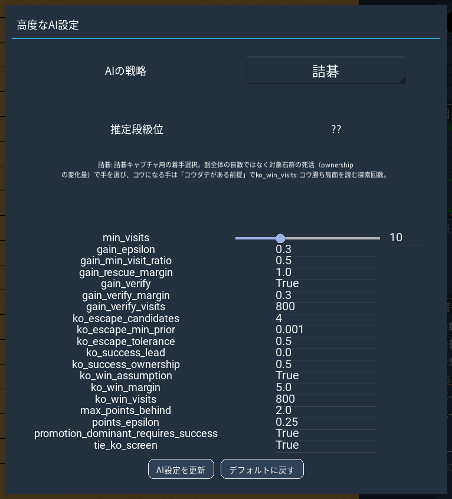
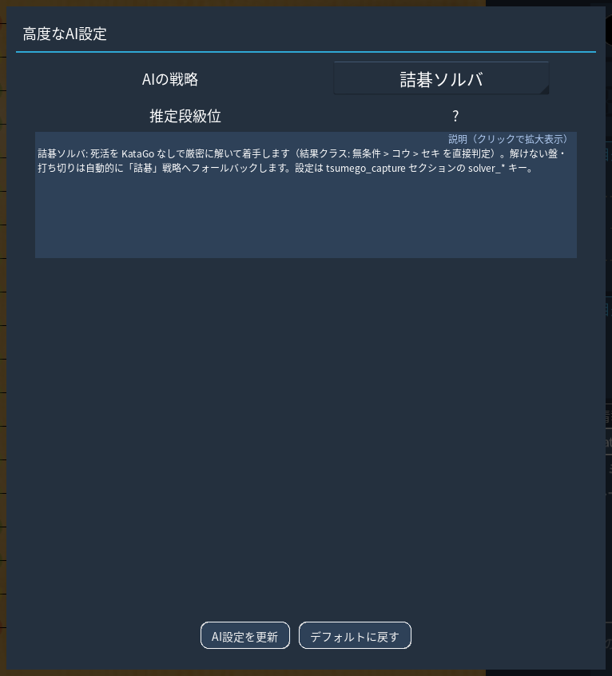
config.json の tsumego_capture セクション（solver_*）にあります。「詰碁」の各項目（max_points_behind・gain_epsilon・points_epsilon・tie_ko_screen・min_visits・gain_* ・ko_* ・promotion_dominant_requires_success）の意味と校正の経緯は開発者向け資料 .claude/rules/tsumego-parameters.md にあります。
07詰碁機能
BlueStacks（Android エミュレータ）上の詰碁アプリや、Web サイトの詰碁をホットキー一発で読み取り、KaTrain 上に同じ局面を再現して AI が正解手を打つ機能です。 白の応手はアプリの盤を監視して自動で取り込まれ、正解手順は「回答帳」に記録して次回から 0 秒で再生できます。さらに ADB でアプリを操作する「自動ループ」で、出題→回答→採点→次の問題を人力ゼロで回せます。
詰碁用の外枠（F10）— 手動で詰碁を検討するとき
隅や辺に石を並べて死活問題を作ったら、「分析オプション」→「詰碁用の外枠」（F10）で盤の残りを石で埋めます。 KataGo は全局の勝率で考えるため、盤が空いていると「他の場所へ手抜きしたほうが得」と判断して詰碁を解いてくれません。外枠は「この問題を解いた側が 5 目勝つ」ように周囲の地を調整するので、AI が問題そのものに集中します。
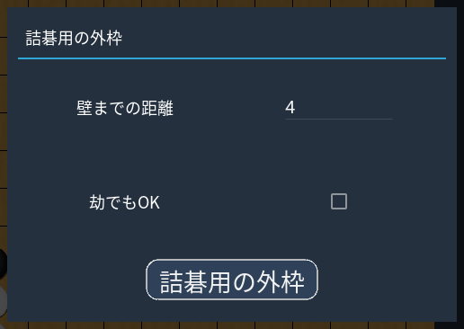
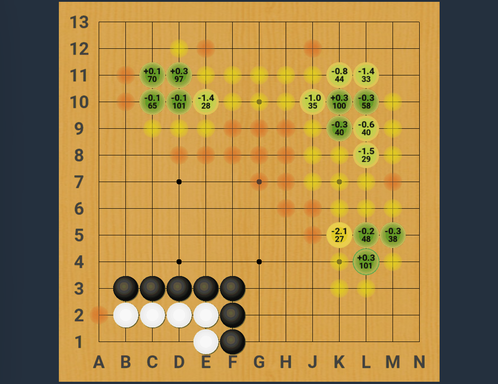
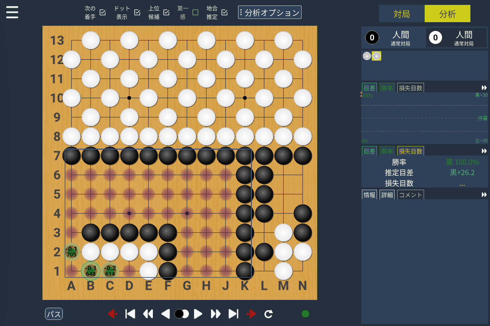
詰碁キャプチャ（ホットキーで読み取る）
準備
- BlueStacks で詰碁アプリ（実測済みは「囲碁詰めチャレ」など。盤が黄色系で石のコントラストが高いアプリ）を開き、問題を表示します。Web の詰碁（PlayGo.gg 等）ならブラウザで問題を表示します。
config.jsonのtsumego_capture.window_title（既定"BlueStacks,Puzzle Run,PlayGo"）に、対象ウィンドウのタイトルの一部が含まれていることを確認します（カンマ区切りで複数・先勝ち）。- KaTrain と対象ウィンドウを両方見える状態にします（ウィンドウが隠れていると「盤面を検出できません」になります）。
ホットキー（4 種類）
| 設定キー | 既定 | いつ使うか |
|---|---|---|
hotkey | F4 | 通常のキャプチャ。黒が攻め方か守り方かは石の配置から自動推定。 |
hotkey_attack | Shift+F4 | 「黒先白死」＝黒が殺す問題と分かっているとき。自動推定を上書き。 |
hotkey_defend | Ctrl+F4 | 「黒先活」＝黒が生きる問題と分かっているとき。 |
hotkey_noframe | Shift+Ctrl+F4 | 枠なしでキャプチャ。正解手順が枠の外へ走り出る大型の問題用（枠の壁が正解の点をふさいでしまうとき）。 |
このリポジトリのローカル設定では Ctrl+Alt+Z / X / C / V に割り当て直してあります（~/.katrain/config.json の tsumego_capture を参照）。グローバルホットキーなので他のアプリが前面でも効きますが、KaTrain の F2〜F12 の機能キーと重ねないでください（重ねるとその機能キーが効かなくなります）。
押した後に起きること
- 対象ウィンドウを画面キャプチャし、盤の矩形・盤サイズ（9/13/19）・各交点の石を認識します（1 秒以内）。認識に失敗するとステータス欄にエラーが出ます。
- 役割（黒が攻め方か守り方か）を決め、問題が小さければ死活ソルバで厳密に解き、そうでなければ枠を張って KataGo で解析します。枠は「攻め方にコウダテを与える／与えない」の両方を試し、問題を壊していないほうを自動採用します（1〜3 秒）。
- KaTrain のウィンドウが前面に来て、盤が拡大表示（詰碁ビュー）になり、黒番の AI が正解手を打ちます（
auto_ai_black）。 - あなたはアプリ側で同じ手をタップします。アプリが白の応手を返すと、KaTrain がアプリの盤を監視して白の手を自動で取り込み、次の黒を打ちます（
watch_white）。以降繰り返し。
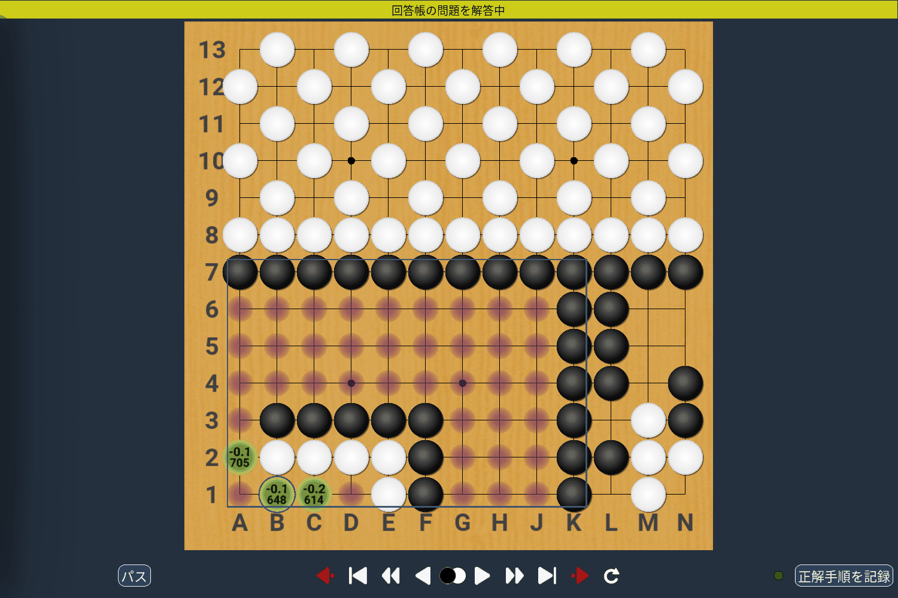
回答帳（正解手順の記録と 0 秒再生）
詰碁アプリは同じ問題を盤の向きを変えて再出題します。回答帳は盤の 8 通りの対称（回転・鏡映）を同一視したキーで問題を照合し、記録済みなら解析なしで即座に正解手順を再生します。
- 不正解だった問題をアプリの解答で確認し、KaTrain でその問題を（キャプチャし直して）開きます。
- 右下の「正解手順を記録」を押すと記録モードになります（帯が青「記録モード開始」）。盤をクリックして正解手順を黒白交互に打ちます。
- ボタンが「この手順を保存」に変わっているので押します。帯が緑「正解手順を回答帳に保存しました」になれば完了。保存先は
~/.katrain/tsumego_answers.json。
| 色 | 文言 | 意味 |
|---|---|---|
| 黄 | 回答帳の問題を解答中 | 記録済みの問題。AI は記録どおりに打っている |
| 緑 | 回答帳の問題（記録手順は再生完了） | 記録した手順を最後まで打ち終えた |
| 橙 | 回答帳の問題（記録外の手順→通常の解析で着手） | 白の応手が記録から外れたので、この手番から通常の解析で打つ |
| 青 / 緑 / 橙（数秒） | 記録モード開始 / 保存しました / 記録できません | 記録ボタンの操作結果 |
| （なし） | 回答帳に無い問題。帯は高さ 0 で消える |

自動ループ（Ctrl+Alt+A）
ADB（BlueStacks の HD-Adb.exe）でアプリを直接操作し、新しい問題の検知 → キャプチャ → AI の黒をアプリにタップ → 白の応手を取り込み → 正解／不正解のポップアップを画面判定 → 次の問題を自動で回します。
正解なら打った手順をそのまま回答帳へ自動記録し、不正解なら「問題を見る」→「戻す」→「ヒント」の赤丸を順にたどって正解手順を収穫し、回答帳に保存してから次へ進みます。
- 開始／停止はどちらも Ctrl+Alt+A。開始時に ADB へ接続し、詰碁アプリが前面の BlueStacks インスタンスを自動で選びます（
tsumego_autoloop.adb_serialで固定も可）。 - BlueStacks 側で「ADB アクセス」を有効にしておく必要があります（設定 → 詳細 → Android デバッグブリッジ）。
- 1 問 1 行の台帳が
~/.katrain/tsumego_ledger.jsonlに、失敗時のスクリーンショットが~/.katrain/logs/autoloop/に残ります。 max_problems（0＝無制限）で問題数を、max_consecutive_errors（既定 3）で連続エラー時の自動停止を決めます。- アプリの UI（ボタン位置・ポップアップの見た目）が変わると判定が外れます。その場合は
python -m katrain.core.tsumego_autoloop probeで画面判定のしきい値を確認し直します。
Web の詰碁（PlayGo.gg など）
BlueStacks 方式で認識できない画像は、自動的に格子線検出＋座標ラベルの文字認識にフォールバックします。Web の盤は問題に合わせて盤の一部だけを表示するため、ラベル（A〜T・1〜19）を読んで絶対座標と盤サイズを確定し、実盤サイズの盤に石を配置して同じ詰碁パイプラインに流します。 19路の全体表示（4 辺すべてにラベル）は「盤面把握問題」とみなし、枠を張らずに通常の解析モードで開きます。
ログと不具合報告
詰碁は 1 問 1 ファイルのログ（~/.katrain/logs/tsumego_<日付>_<時刻>.log）に、認識した盤面・枠の採否・各手の判定が揃って残ります。誤答を報告するときはこのファイルを添えれば再現できます。
回答帳に記録した問題のログは自動削除から保護され（.keep）、30 日より古いものは logs/archive/tsumego_YYYYMM.zip に自動でまとめられます（検索は python tools/grep_tsumego_logs.py "正規表現"）。
主な設定（config.json の tsumego_capture）
詰碁の設定は GUI の設定画面には無く、~/.katrain/config.json を KaTrain 終了後に直接編集します。よく触るものだけ挙げます。
| キー | 既定 | 意味 |
|---|---|---|
| enabled | true | 詰碁キャプチャ機能全体の有効化（false でホットキーも登録しない） |
| hotkey / hotkey_attack / hotkey_defend / hotkey_noframe | f4 / shift+f4 / ctrl+f4 / shift+ctrl+f4 | 上述の 4 ホットキー |
| window_title | "BlueStacks,Puzzle Run,PlayGo" | 対象ウィンドウのタイトル（部分一致・カンマ区切り） |
| board_sizes | [9, 13, 19] | 認識を試す盤サイズ |
| frame_margin | 4 | 枠の壁までの距離（大型の問題では自動で縮む） |
| frame_ko_auto | true | コウダテを攻め方に与える枠／与えない枠の両方を試して自動採用 |
| maximize_on_capture | true | キャプチャ後に KaTrain を前面化して詰碁ビューにする |
| auto_ai_black | true | 黒番の AI が自動で正解手を打つ（false なら自分で打つ） |
| analysis_visits | 1800 | 枠内の解析に使う探索手数 |
| watch_white | true | 白の応手をアプリの盤から自動で取り込む（Ctrl+Alt+D で一時停止） |
| watch_active_on_ahead | true | 白待ちの間も 50ms 周期で監視（反映が速いぶん CPU を使う） |
| ponder_replies | 3 | 白の有力応手を先読みして解析を温める本数（0 で無効） |
| solver_enabled | true | 死活ソルバを使う。solver_capture_max_region（23 点）・solver_capture_max_empties（12 点）以下の小さい問題だけ |
| solver_time_limit_ms | 5000 | 1 手の求解時間の上限。超えたら「詰碁」戦略へ |
| solver_cross_check | true | ソルバの答えを KataGo と突き合わせ、抽出が別問題だったときに見抜く安全網 |
08盤面監視モード（対局アプリと連動）
BlueStacks 上の囲碁対局アプリと KaTrain を並べて使い、アプリ側（相手）の着手を自動で KaTrain に取り込むモードです。KaTrain では「AI vs 人間」の対局として扱われ、アプリの相手の手が人間側の着手として入り、KaTrain の AI が応手を決めます。 AI の応手はアプリの盤の該当する交点の真上に光る輪で示されるので、あなたはそこをタップするだけです。
準備と使い方
- BlueStacks で対局アプリを開き、対局を始めます（空の盤でも、相手の初手が乗った盤でも可）。KaTrain と BlueStacks を両方見えるように並べます。盤の見た目は黄色い盤（囲碁クエスト系）と明るい木目盤（座標ラベル付きのアプリ）の両方に対応しており、自動で判別されます（9・13・19路）。同じタイトルの BlueStacks を 2 つ開いていると片方しか掴めないので、監視したいアプリのウィンドウだけを開いてください。
- KaTrain の対局者設定で片方を AI（使いたい戦略。「難解」など何でも）、もう片方を人間にしておきます。どちらの色を AI にしておいても構いません。黄色い盤のアプリでは、監視を始めるときにアプリ画面の手前（下）の対局者の石アイコンから自分の色を読み、KaTrain の AI をその色へ自動で入れ替えます（木目盤のアプリは設定どおりの色で打つので、自分の色を AI にしておきます）。新規対局を作る必要はありません（アプリの盤をそのまま取り込みます）。ルールとコミはアプリに合わせます。
- Ctrl+Alt+D を押します。現在のアプリの盤面を取り込んでから監視が始まり、盤の上に緑の帯「盤面監視中」が出ます。
- 相手（アプリ）が打つと数百ミリ秒以内に KaTrain の盤に反映され、AI が応手を決めます。応手はアプリの盤の上に色つきの輪で表示されるので、その交点をアプリでタップします。
- 続けて次の対局を打つときは何もしなくて構いません。監視中にアプリで次の対局が始まる（盤が空、または 2 子以内の序盤になる）と、KaTrain も自動で新しい対局に切り替わり、手前の対局者の色に合わせて AI の色も入れ替えます（黄色い盤のアプリのみ）。
- もう一度 Ctrl+Alt+D で監視を止めます。止め忘れても、対局が 5 分間進まなければ（アプリで投了・時間切れになった後など）監視は自動で止まり、青い帯でお知らせします。続けるときは Ctrl+Alt+D を 1 回押せば再開します。
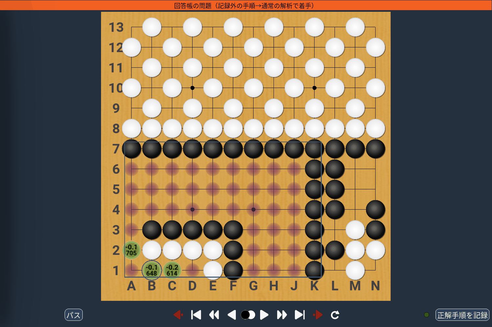
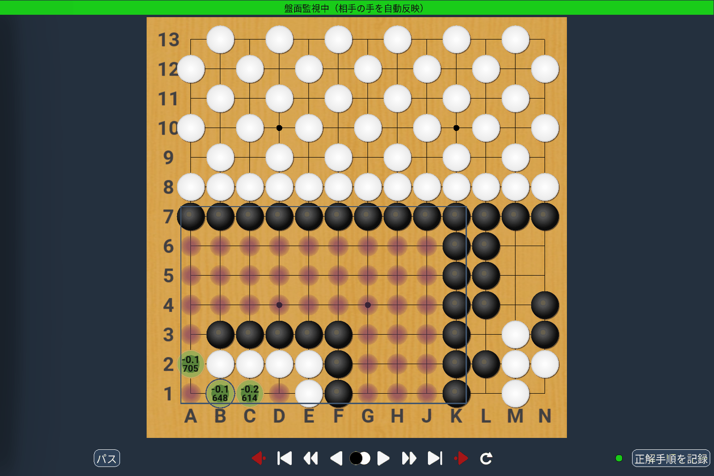
AI 着手の強調表示
一般・エンジン設定の「AI 着手の強調表示（監視モード）」で輪の色を選べます（表示しない／シアン／マゼンタ／緑／赤／オレンジ／白）。 輪は最前面のクリック透過ウィンドウなので、アプリの操作を邪魔しません。監視の自前キャプチャからは除外されているため、輪が盤の認識を狂わせることもありません。
できること・できないこと
| 項目 | 状態 |
|---|---|
| 相手の着手の取り込み | ○ 自動（アプリ→KaTrain の片方向） |
| AI の着手をアプリへ打つ | × 自動タップはしません。輪の位置をあなたがタップします（詰碁の自動ループは別で、ADB でタップします） |
| 相手のパス | × 盤面が変わらないので検出できません。KaTrain 側で手動でパスしてください |
| 終局・整地 | × 盤面が大きく変わるので警告になります。監視を止めてください（止め忘れても、対局が 5 分間進まなければ自動で止まります） |
| 連続対局（次の対局の取り込み・色の自動判定） | ○ 黄色い盤のアプリ（手前の対局者の石アイコンから色を読みます。対局と対局の間が 5 分を超えると自動停止するので、そのときは Ctrl+Alt+D を 1 回）／× 木目盤のアプリ（色は KaTrain の設定どおり。次の対局は Ctrl+Alt+D で OFF にしてから ON） |
| コウの取り返し | △ 盤 1 枚では「1 手前に戻った」のと区別できないため、注入しない側に倒れます（安全側） |
応答速度のしくみ
監視中は「相手が考えている間」に相手の有力応手（humanSL 9 段の順で上位 5 手）の局面を先読みして KataGo のキャッシュを温めるため、相手が打った直後の AI 応手が 0.5 秒前後で返ります（先読みが外れたときは通常どおり 1.5〜3 秒）。 「難解」戦略と組み合わせるとヨセの追加解析も省かれ、秒読みのある対局でも間に合う速さになっています。
主な設定（config.json の board_watch）
| キー | 既定 | 意味 |
|---|---|---|
| enabled | true | 機能の有効化 |
| hotkey | ctrl+alt+d | 監視のトグル。KaTrain の機能キー（F2〜F12）と重ねない |
| window_title | "" | 空なら tsumego_capture.window_title を引き継ぐ |
| poll_interval_ms / poll_interval_active_ms | 400 / 50 | ポーリング周期（相手の手を待っていない間／待っている間） |
| prefetch_replies | 5 | 先読みする相手の応手の数（0 で無効） |
| stable_frames | 2 | 同じ変化が何回連続で見えたら確定するか（誤検出防止） |
| stall_warn_sec | 20 | 何も変化しないまま経過したら警告する秒数 |
| active_slowdown_sec | 20 | 相手の手をこの秒数以上待ったら確認間隔を poll_interval_ms に落とす（省電力。長考のあとの反映が最大 0.35 秒遅れるだけ。0 で無効） |
| auto_stop_sec | 300 | 対局（KaTrain の手数）がこの秒数進まなければ監視を自動停止する（0 で無効） |
| highlight_color | cyan | 輪の色（設定画面のドロップダウンと同じ） |
09盤面テーマ（盤と碁石のデザイン）
一般・エンジン設定の「盤面テーマ」ドロップダウンで、盤の木目・碁石・線の見た目を切り替えられます。同梱テーマは default / koast / lizzie / milos の 4 つ（元の KaTrain の themes に由来）。
盤の描画はその場で切り替わります。右パネルの背景色やフォントなど盤以外の部分は再起動後に反映されます。
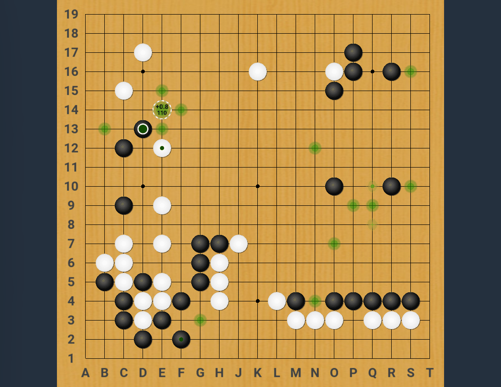
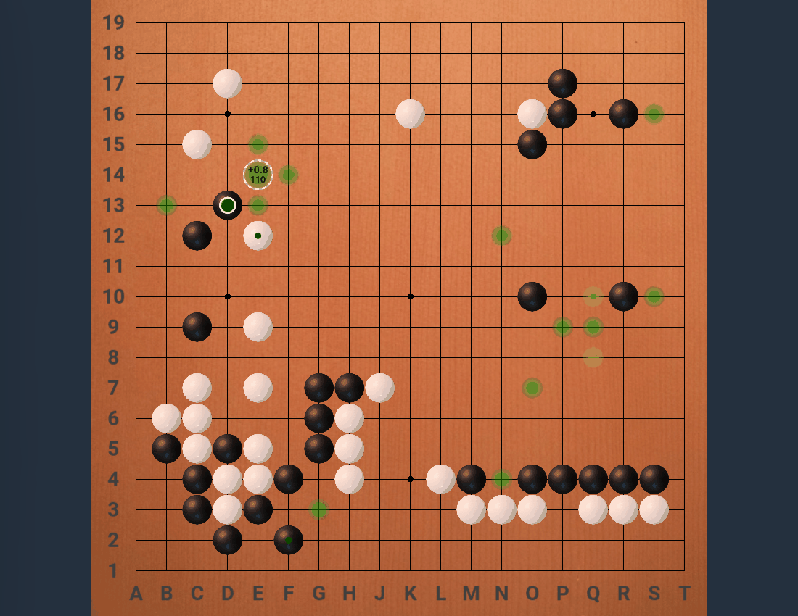
自分でテーマを作る
~/.katrain/themes/<名前>/にフォルダを作り、theme.json（katrain/gui/theme.pyのThemeクラスの属性を上書き）と、差し替えたい画像（board.png/B_stone.png/W_stone.png等・同梱と同じファイル名）を置くと一覧に出ます。- 従来どおり
~/.katrain/theme*.jsonをベタ置きした設定は常時適用され、その上に選択テーマが重なります。 - 地合推定の表示スタイル（
TERRITORY_DISPLAY: blended / shaded / marks / blocks）や石のマーク（STONE_MARKS: all / weak / none）、色（OWNERSHIP_COLORS）もテーマで変えられます。詳細はTHEMES.md。
10設定リファレンス
設定ファイルとフォルダ
| 場所 | 内容 |
|---|---|
~/.katrain/config.json | すべての設定（エンジン・一般・対局・AI 戦略ごとの値・詰碁・盤面監視・自動ループ・UI 状態）。GUI の各設定画面はこのファイルを書き換えます。KaTrain 終了後に手で編集可。 |
katrain/config.json（パッケージ） | 初期値。「デフォルトに戻す」はここから読みます。 |
katrain/KataGo/analysis_config.cfg | エンジンに実際に渡される KataGo の設定（スレッド数など）。~/.katrain/analysis_config.cfg は参照されません。 |
~/.katrain/logs/ | ログ。対局 game_*.log（20 手未満は削除・10 本保持）、詰碁 tsumego_*.log（1 問 1 ファイル・30 本保持・回答帳に記録した問題は保護）、archive/（30 日より古い詰碁ログの zip）、autoloop/（自動ループの失敗スクショ）。 |
~/.katrain/tsumego_answers.json | 回答帳。 |
~/.katrain/tsumego_cache/ | 死活ソルバの永続キャッシュ。 |
~/.katrain/tsumego_ledger.jsonl | 自動ループの台帳（1 問 1 行）。 |
~/.katrain/trtcache/ | TensorRT のチューニング結果。消すと次回起動が数分遅くなります。 |
~/.katrain/themes/ | ユーザー追加の盤面テーマ。 |
config.json のセクション
| セクション | 主なキー | 設定画面 |
|---|---|---|
engine | katago / model / humanlike_model / config / max_visits / fast_visits / max_time / wide_root_noise / _enable_ownership | 一般・エンジン設定（F8） |
general | lang / board_theme / debug_level / anim_pv_time / anim_pv_moves / sgf_load / sgf_save / load_fast_analysis / load_sgf_rewind | 同上（保存先フォルダは直接編集） |
game | size / komi / handicap / rules / clear_cache / setup_move / setup_advantage | 新規対局（Ctrl+N） |
timer | main_time / byo_length / byo_periods / minimal_use / sound | 時間設定（F5） |
trainer | eval_thresholds / num_undo_prompts / show_dots / save_feedback / theme / top_moves_show / low_visits / eval_on_show_last / show_move_numbers / eval_show_ai / save_analysis 等 | 指導・分析設定（F6） |
ai | ai:<戦略> ごとの設定値（→ 06） | AI設定（F7） |
tsumego_capture | ホットキー・ウィンドウ名・枠・ソルバ・白番監視（→ 07） | なし（直接編集） |
board_watch | ホットキー・ポーリング・先読み・強調表示の色（→ 08） | 色のみ一般設定に |
tsumego_autoloop | enabled / hotkey / adb_path / adb_serial / poll_ms / settle_ms / answer_timeout_s / capture_timeout_s / max_problems / max_consecutive_errors | なし（直接編集） |
contribute | KataGo 分散訓練（katagotraining.org）への参加設定 | 分散訓練（F9） |
ui_state | ウィンドウ位置・サイズ、モードごとのパネル状態 | 自動保存 |
デバッグ出力
一般設定の「コンソールのデバッグレベル」を 1 にすると、AI 戦略が手を選んだ理由（フィルタを通った候補数・安全弁の発動・フェーズなど）がログに詳しく出ます。不具合を報告するときは 1 にして再現し、~/.katrain/logs/ のログを添えてください。確認後は 0 に戻します（ログが大きくなるため）。
対局なしで特定の局面の戦略の判断を再現するコマンドラインツールもあります（開発者向け）:
python -m katrain_debug --sgf 棋譜.sgf --move 30 --strategy hunt --output text
python -m katrain_debug --sgf 棋譜.sgf --strategy enigma13 --batch --player W # 1局通しの一致率・損失11キーボード・マウス操作一覧
| キー | 動作 |
|---|---|
| Alt | メインメニューを開閉 |
| Tab | 対局／分析モードの切替 |
| Ctrl+N | 新規対局 |
| Ctrl+L | 棋譜読込 |
| Ctrl+S / Ctrl+D | 棋譜保存／名前をつけて保存 |
| Ctrl+C / Ctrl+V | SGF をクリップボードへ／から |
| F5 F6 F7 F8 F9 | 時間設定／指導・分析設定／AI設定／一般・エンジン設定／分散訓練 |
| F2 / F3 / F10 | 一局全体を深く分析／評価レポート／詰碁用の外枠 |
| F12 ` ~ | 最小表示の切替 |
| Esc | すべての解析を停止 |
| キー | 動作 |
|---|---|
| p | パス |
| Enter | AI に 1 手打たせる |
| ← z / → x | 1 手戻す／進める（Shift で 10 手、Ctrl で最初／最後まで） |
| Home / End | 最初／最後の手へ |
| ↑ / ↓ | 分岐の切替 |
| n / Shift+n | 次／前の悪手（オレンジ以上）の直前へ |
| b / Shift+b | 前の分岐点へ／主分岐へ戻る |
| c | 分岐の折り畳み／展開 |
| PageUp | 選択中の手を主分岐にする |
| Ctrl+Delete | 選択中の手以降を削除 |
| Pause | 時計の一時停止／再開 |
| k / m | 座標表示／手数表示の切替 |
| キー | 動作 |
|---|---|
| q w e r t | 次の着手／ドット／上位候補／第一感／地合推定 |
| a s d f | 深く分析／均等分析／盤上全手／他の候補 |
| g / h | 領域を絞る／分析リセット |
| i / l | 挿入モード／終局まで自動対局 |
| Space / Shift+Space | 継続分析の切替（候補表示を ON にしない版） |
| 操作 | 動作 |
|---|---|
| 右パネル上でホイール | 手を進める／戻す |
| 候補手の上でホイール | 予想手順を 1 手ずつ進める |
| 候補手の上でホイールクリック | 予想手順を手順ツリーに追加 |
| 着手をクリック／ダブルクリック | その手の詳細を表示／その手の直前へ移動 |
| 丸い対局者アイコンをクリック | 黒白を入れ替え |
| F4 系（設定可） | 詰碁キャプチャ（自動推定／攻め方／守り方／枠なし） |
| Ctrl+Alt+D | 盤面監視のトグル（詰碁の白番監視の停止にも） |
| Ctrl+Alt+A | 詰碁の自動ループのトグル |
12トラブルシューティング
| 症状 | 原因と対処 |
|---|---|
| 起動後、右下のランプが赤いまま／「KataGo の起動に失敗」のダイアログ | 一般・エンジン設定の KataGo 実行ファイル・モデル・設定ファイルのパスを確認。ダイアログの「別バージョンの KataGo をダウンロード」で OpenCL 版に切り替えると動くことがあります。GPU ドライバの更新後は ~/.katrain/trtcache の再構築で初回起動が数分かかります。 |
| Human-like 系の戦略を選んでいるのに、明らかに KataGo 最善手ばかり打つ | humanSL モデルが設定されていません。一般・エンジン設定「Path to human-like model」に b18c384nbt-humanv0.bin.gz のフルパスを入れて「設定を更新」。 |
| AI の着手が遅い（数秒〜十数秒） | humanSL 系は毎手 2 回以上解析します。「分析時の最大探索手数」を下げる（1000 前後）、「難解」では先読みが効くよう相手（人間）側の考慮時間を確保する、CPU 版 KataGo なら GPU 版へ。 |
| 9 路で「狩猟戦略」がいきなりパスする | 狩猟は 9 路非対応で、9 路ではパスを返す仕様です。9 路では「力戦派」「持碁（9路）」「一致率追随（9路）」「難解（9路）」を使ってください。 |
| 「難解（13路）」を 9 路で選んだら普通の最善手しか打たない | 盤サイズ専用戦略は対応しない盤では常に最善手です。盤サイズに合った版を選んでください。 |
| AI 設定画面に、追加したはずの項目が出ない | 設定画面は ~/.katrain/config.json に保存されているキーだけを表示します。「デフォルトに戻す」を押すとパッケージ既定のキーが全部書き込まれます。 |
| 設定ファイルを手で直したのに反映されない | KaTrain 起動中に編集すると、終了時にアプリが設定を丸ごと書き戻して上書きします。終了してから編集してください。 |
| F4（詰碁キャプチャ）や Ctrl+Alt+D が効かない | ①tsumego_capture.enabled / board_watch.enabled が true か、②他のアプリが同じグローバルホットキーを登録していないか（登録に失敗するとログに出ます）、③対象ウィンドウのタイトルが window_title に含まれているか、を確認。 |
| キャプチャで「盤面を検出できません」 | 対象ウィンドウが他のウィンドウに隠れている、最小化されている、盤が画面外に出ている、盤の色が想定と違う（黄色系以外）。ウィンドウを前面に出して撮り直してください。Web の詰碁は格子線とラベル（A〜T・1〜19）が見えている必要があります。 |
| 詰碁で AI が不正解を打つ | 役割の自動推定が外れている場合は Shift+F4（殺す）／Ctrl+F4（生きる）で撮り直し。正解手順が枠の外に出る大型問題は Shift+Ctrl+F4（枠なし）。それでも違えば正解を「回答帳」に記録すると次回から確実です。ログ ~/.katrain/logs/tsumego_*.log に判定の根拠が残ります。 |
| 盤面監視で「同期できません」の警告が続く | アプリ側でパス・投了・整地が起きたか、KaTrain 側の局面とずれました。監視を止め（Ctrl+Alt+D）、必要なら手動で局面を合わせてから再度 ON にすると現在の盤を取り込み直します。 |
| 盤面監視中に相手の手が反映されない | アプリの盤が KaTrain の盤と同じ手番・同じ局面から始まっているか確認。相手のパスは検出できないので KaTrain 側で手動パス。BlueStacks が別ウィンドウに隠れていると認識できません。 |
| 盤面監視がいつの間にか止まっている（青い帯） | 対局が 5 分間進まないと、終局後の空回り（電力・発熱）を防ぐため監視が自動で止まります。Ctrl+Alt+D を 1 回押せば再開します（アプリが次の対局に移っていればその盤を取り込みます）。止まるまでの時間は board_watch.auto_stop_sec（0 で無効）。 |
| 盤面監視で KaTrain の AI の色が入れ替わらない／逆になる | 黄色い盤のアプリでは、手前（下）と相手（右上）の対局者の石アイコンから色を読みます。ログの board_watch: 対局者アイコン 手前=? 相手=? で読めているか確認してください（2 つが逆の色に読めたときだけ使います）。読めないとき（木目盤のアプリ・画面レイアウトが違う）は KaTrain の対局者設定どおりの色で打ちます。KaTrain 側で AI が 0 人または 2 人だと、どの戦略を使うか決められないので開始しません。 |
| 自動ループが「ADB に接続できません」 | BlueStacks の設定 → 詳細 →「Android デバッグブリッジ」を ON にして BlueStacks を再起動。tsumego_autoloop.adb_path が HD-Adb.exe を指しているか確認。複数インスタンスがある場合は adb_serial（例 127.0.0.1:5585）で固定。 |
| 評価レポートの一致率が高すぎる（AI っぽい） | 「一致率追随（9路）」「AI一致率低減」「狩猟（一致率低減）」「難解」を使う。難解は勝勢のときほど一致率が下がり、接戦では勝ちを優先して上がります。Human-like でも「第一感ブレ」を ON にすると下がります。 |
| 対局アプリと目差が合わない | ルール（日本／中国）とコミをアプリに合わせてください。中国ルールでは終局時のダメ詰めや死石の取り込みで目差が動きます。 |
付録用語集
| 用語 | 意味 |
|---|---|
| KataGo | KaTrain が使う囲碁 AI エンジン。局面の勝率・目差・候補手を計算します。 |
| モデル（ニューラルネット） | KataGo が局面を評価するために使う学習済みの重みファイル（.bin.gz）。通常モデルと humanSL モデルの 2 種類を使います。 |
| humanSL モデル | 人間の棋譜から「この段級位の人はどこに打つか」を学習したモデル（b18c384nbt-humanv0.bin.gz）。Human-like 系の戦略の土台。 |
| humanPolicy | humanSL モデルが出す「指定した段級位の人間がその手を打つ確率」。高いほど自然な手。本書では「人間らしさ」とも書きます。 |
| policy（第一感） | ニューラルネットが読みを入れずに出す「次の一手の確率分布」。KaTrain の「第一感」表示。 |
| visits（探索手数） | KataGo が 1 局面で読んだ手数（探索回数）。多いほど正確で遅い。候補手の下の数字（例 2.0k）はその手に費やした visits。 |
| 目（目差・scoreLead） | 地の差。KataGo の「推定目差」は終局時の予想。損失は「最善手と比べて何目損か」。 |
| 勝率（winrate） | KataGo が推定する勝つ確率。内部では常に黒視点で計算され、表示は手番側に変換されます。 |
| 地合推定（ownership） | 各交点が最終的にどちらの地になるかの推定（−1＝白 〜 +1＝黒）。「未確定点」は絶対値が 0.5 未満の交点。 |
| 損失（pointsLost） | ある手を打つことで最善手と比べて失う目数。ドットの色の元。 |
| 悪手フィルタ | Human-like 系の戦略が「損失がしきい値を超える手は人間らしくても打たない」ようにする仕組み。序盤 2.8 目・中盤以降 5.6 目（9路 0.5 / 3.3 目）。 |
| 安全弁 | 重み付け抽選で選ばれそうな手が 4 目以上損なら KataGo 最善手に差し替える保険（攻撃型戦略）。 |
| 一致率 | 評価レポートの「AI の最善手との一致率」＝打った手が KataGo の最善手と同じだった割合。AI らしさの指標。 |
| ヨセ（終盤） | 境界を確定させる終盤。戦略ごとの「ヨセ切替手数」以降は棋風の重み付けをやめて最善手か 9 段の第一感に戻ります。 |
| 持碁（ジゴ） | 目差 0 の引き分け。「Kata持碁」は僅差勝ち、「難解」の aim_jigo は持碁〜2 目以内の負けを狙います。 |
| コウダテ | コウを取り返すために打つ「相手が応じざるを得ない手」。詰碁ではコウダテがある前提で正解が決まるため、KaTrain の詰碁機能もそう評価します。 |
| セキ | お互いに手を出せず両方生きている形。詰碁の正解の順序は 攻め方: 無条件死 > コウ > セキ、守り方: 無条件生き > セキ > コウ。 |
| 枠（詰碁用の外枠） | 死活問題の周りを石で埋めて、AI が問題に集中できるようにする仕組み（F10）。 |
| df-pn（死活ソルバ） | 証明数探索という手法で死活を厳密に解くプログラム。KataGo と違い「読み切れれば必ず正しい」が、大きい問題は解けない。 |
| 回答帳 | 詰碁の正解手順を記録し、同じ問題（盤の向き違いも含む）が出たら 0 秒で再生する機能。 |
| BlueStacks / ADB | Windows 上で Android アプリを動かすエミュレータと、そのアプリをコマンドで操作する仕組み（Android Debug Bridge）。 |
| SGF | 棋譜ファイルの標準形式。KaTrain は解析結果やコメントも埋め込めます。 |
KaTrain v1.17.1.1 修正版 完全マニュアル — 2026-08-29 版。元ソフト: sanderland/katrain（MIT License）。
開発者向けの設計・実測記録は docs/superpowers/specs/INDEX.md、戦略の設計解説は ai-strategy-guide.html、
スクリーンショットは tools/manual_screenshots.py で再生成できます。